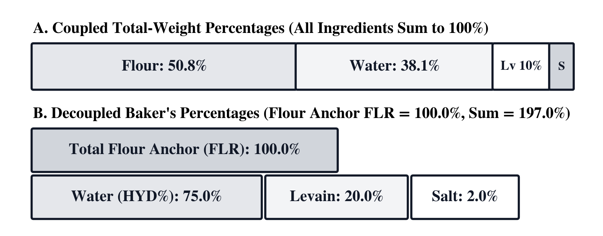
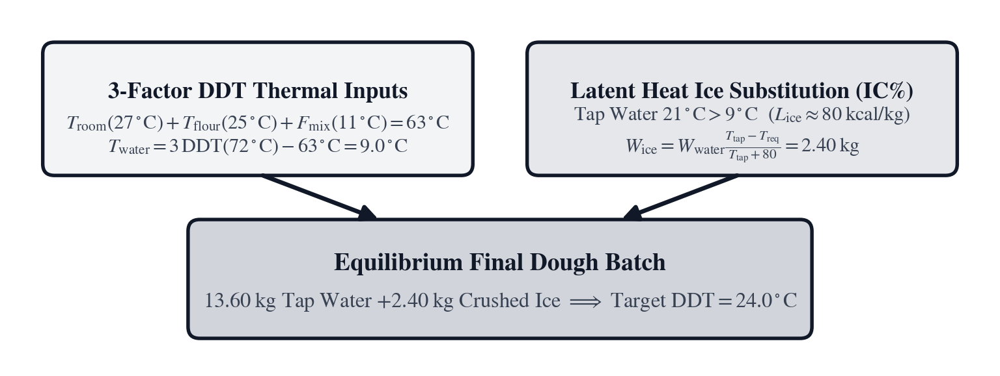
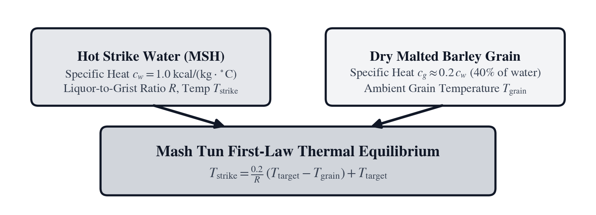
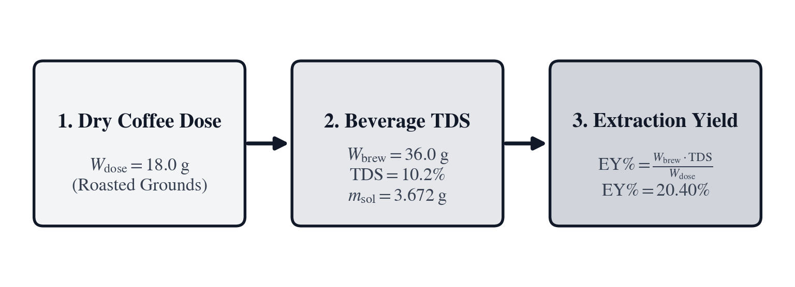

Unit VII: Commercial Baking, Dough Thermodynamics & Brewing Science
Food and beverage production at commercial scale is applied chemical thermodynamics, multi-species microbiological kinetics, and precision mass-transfer engineering. Behind the craft traditions of the hearth, the fermentation cellar, and the brewhouse lies an uncompromising physical discipline. Granular solids pack with variable bulk density, turning volumetric domestic measures into erratic approximations; enzymatic hydrolyses accelerate exponentially with temperature; and mechanical shear from heavy industrial mixing machinery converts electrical work into thermal energy that can destabilize delicate biological matrices. When these transformations are executed across hundreds of kilograms of perishable commodities, mathematical rigor is the sole guarantor of consistency, safety, and economic survival.
In domestic kitchens, recipes are traditionally recorded in volumetric scoops—two cups of flour, one cup of water, a teaspoon of salt—yet granular solids pack with highly variable bulk density. Depending on ambient humidity, milling particle size distribution, and whether the grain was loosely sifted or tamped down, a standard United States cup of wheat flour (\(236.6\text{ mL}\)) weighs anywhere from \(110\text{ g}\) to \(160\text{ g}\). That \(45\%\) mass variation fundamentally disrupts gluten polymer cross-linking, osmotic pressure on living yeast cells, and charcuterie curing safety. Even after replacing volumetric scoops with gravimetric platform balances, expressing a commercial dough formula in conventional weight percentages that sum to \(100\%\) (such as \(\text{Flour } 51.49\% + \text{Water } 37.08\% + \text{Levain } 10.30\% + \text{Salt } 1.13\% = 100.00\%\)) couples every single ingredient together algebraically. If a baker needs to increase water by \(2\%\) to compensate for a drier, high-protein winter wheat harvest, the numerical percentages of flour, levain, and salt are forced to shrink simply so the ledger still totals \(100\%\). Nineteenth-century European guild and commercial bakers resolved that mathematical coupling by anchoring every ingredient mass to total flour mass, permanently fixed at \(100.0\%\). In this Baker's Percentage coordinate system, dough hydration, sourdough levain inoculation, and salt ratios remain independent, invariant physical constants across any batch size—allowing formulas to scale instantly from two test boules on a marble slab to two thousand baguettes in an industrial tunnel deck oven without re-solving coupled systems of equations.
Controlling biological fermentation in the bakery and brewhouse requires balancing mechanical work against sensible and latent heat. Baker's yeast (Saccharomyces cerevisiae) and sourdough lactic acid bacteria (Fructilactobacillus sanfranciscensis) roughly double their metabolic carbon-dioxide evolution and organic acid synthesis for every \(8^\circ\text{C}\text{ to }10^\circ\text{C}\) (\(15^\circ\text{F}\)) rise in dough temperature (\(Q_{10} \approx 2.0\)). This extreme thermal sensitivity forms the foundation of modern zymurgy, rooted in Louis Pasteur's landmark 1876 treatise Études sur la Bière (Studies on Beer). Following the devastation of the Franco-Prussian War, Pasteur applied rigorous temperature calorimetry and optical microscopy to demonstrate that fermentation and beer spoilage were not spontaneous chemical breakdowns as nineteenth-century dogma held, but competitive microbiological reactions governed strictly by thermodynamics and enzyme kinetics. Pasteur showed that without strict thermal discipline, wild bacteria outpace brewing yeasts, converting sweet wort into sour vinegar and lactic acid.
When heavy electric spiral mixers entered twentieth-century bakeries, viscous shear between the rotating steel hook and the developing gluten matrix converted mechanical work into thermal energy, warming the dough during mixing. If dough exits the mixer bowl at \(29^\circ\text{C}\) (\(84^\circ\text{F}\)) instead of the intended \(24^\circ\text{C}\) (\(75^\circ\text{F}\)), wild yeasts and lactobacilli ferment uncontrollably: the enzymatic breakdown of starch accelerates, proteolytic enzymes dismantle the gluten matrix, and shaped loaves puddle flat on the loader peel before ever reaching the hearth oven. To hit a repeatable post-mix desired dough temperature (DDT, spoken as D-D-T), bakers solve an inverse enthalpy balance for the required strike-water temperature. Furthermore, when hot summer ambient air warms municipal water beyond the cooling threshold, bakers substitute flake ice, harnessing its massive \(80\text{ kcal/kg}\) (\(144\text{ BTU/lb}\)) latent heat of fusion to absorb excess heat without altering dough hydration. Meanwhile, all-grain brewers balance the specific heat of dry malted barley against hot strike liquor to land within the exact \(64^\circ\text{C}\text{–}69^\circ\text{C}\) (\(147^\circ\text{F}\text{–}156^\circ\text{F}\)) enzymatic window where \(\alpha\)-amylase and \(\beta\)-amylase hydrolyze complex grain starches into fermentable sugars and mouthfeel dextrins.
Quantitative brewing science (zymurgy) traces its mathematical foundation to 1843 in Prague. There, Bohemian chemist Carl Joseph Napoleon Balling calibrated aqueous sucrose density tables so brewers could monitor malt starch conversion and yeast attenuation with a floating hydrometer measuring Specific Gravity. In 1854, Prussian civil engineer Adolf Ferdinand Wenceslaus Brix refined Balling's pycnometric tables for the beet-sugar and fermentation trades. In 1900, German chemist Fritz Plato standardized the extract scale (\(1^\circ\text{P} = 1\text{ g}\) sucrose per \(100\text{ g}\) wort) for the Imperial Normal Calibration Commission, linking the gravity drop from temperature-corrected Original Gravity to Final Gravity to Alcohol by Volume. Nearly a century later in 1995, Oregon brewing scientist Glenn Tinseth modeled the first-order thermal isomerization kinetics of hop alpha acids (Humulus lupulus) across boil time and wort gravity, turning the art of beer bittering into an exact biochemical rate equation.
Applied culinary and fermentation sciences bring chemical thermodynamics, microbiological rate equations, and mass conservation directly into food production: scaling sourdough formulas to total flour mass, calculating mixer friction calorimetry, predicting all-grain mash strike enthalpies, and modeling hop isomerization kinetics. The SC-78 Culinary, Baking, Brewing & Hospitality calculator brings gravimetric dough scaling, thermal balances, wort extract density, and yield economics to the production kitchen and brewhouse. Three operational challenges structure this study:
In Chapter 19, we scale country sourdough production across varying mixer capacities, balancing flour-weight Baker's percentages, true pre-ferment hydration, mixer shear friction, and latent-heat flake ice substitution.
In Chapter 20, we brew a commercial pale ale and high-gravity double IPA, solving grain-water mash strike thermodynamics, mash tun thermal mass, hydrometer extract conversions, apparent versus real attenuation, and hop alpha-acid isomerization kinetics.
In Chapter 21, we manage commercial culinary fabrication, calculating multi-stage butcher yields, portion protein costs, hyperbolic margin-versus-markup pricing, Raoult water activity, and free sulfur dioxide stability in cellar wines.
Chapter 19: Scaling Two Hundred Country Loaves on a Hot July Morning
Scaling two hundred naturally leavened country sourdough loaves (\(176.2\text{ kg}\) total dough mass) on a hot July morning is an exercise in commercial dough thermodynamics: fifteen minutes of mechanical kneading in a heavy industrial spiral mixer injects \(M = 9.0^\circ\text{C}\) (\(16.2^\circ\text{F}\)) of shear friction heat directly into the viscoelastic gluten matrix. Commercial bread flour is an active, hygroscopic matrix of starches and proteins that absorbs or sheds moisture with every shift in ambient humidity, leaving no room for adjustments by feel once the mixer begins turning.
If the baker draws tap water straight from the hose on a hot morning, the dough will exit the mixer above thirty degrees Celsius. At that temperature, wild bacteria outpace yeast, proteolytic enzymes dismantle the gluten scaffolding, and the loaves puddle into flat disks on the oven deck. Hitting an exact Desired Dough Temperature (\(D = 24.0^\circ\text{C}\)) requires solving the four-term thermal balance before the first liter of water touches the grain, determining the required strike-water temperature, and substituting flake ice for tap water to absorb mixer friction through latent heat of fusion.
To scale the batch across fixed deck ovens and bowl capacities, Head Baker Claire turns to the SC-78 Commercial Culinary & Brewing calculator:
Flour-Anchored Baker's Percentages and Pre-Ferment Hydration
Commercial dough formulation rests on decoupling ingredient adjustments from one another through a single invariant mass reference. In conventional domestic cookery, recipes are recorded in volumetric measures or standard weight percentages that total \(100\%\). While summing to one hundred percent feels mathematically neat to an accountant, it creates operational chaos in a commercial production facility.
The Algebraic Coupling Problem of Standard Percentages
Consider the algebraic dilemma that confronted nineteenth-century master bakers when formulas were expressed in standard total-weight fractions. Let a dough formula consist of \(m\) ingredients with individual masses \(w_1, w_2, \dots, w_m\) such that total batch mass is \(W_{\text{total}} = \sum_{j=1}^m w_j\). In standard percentage mathematics, each ingredient's fraction is defined as:
Because \(\sum_{i=1}^m x_i \equiv 1.00\) (\(100\%\)), every single component fraction \(x_i\) is inextricably coupled to every other component. Suppose a master baker evaluates a delivery of hard red winter wheat and discovers that its damaged starch content and protein level require an additional \(2\%\) water absorption to achieve optimal rheological extensibility. If the baker adds water to the formula under standard percentages, the denominator \(W_{\text{total}}\) increases. Consequently, the calculated percentages of flour, salt, yeast, and sourdough culture all decrease, even though their physical weights remained completely untouched.
To recalculate the formula under standard percentages, the baker would be forced to solve a coupled system of simultaneous linear equations across the entire ledger just to preserve the intended ratio of salt to flour. In a bustling wholesale bakery mixing thirty batches a day across twelve deck ovens, this algebraic coupling led to frequent mathematical errors, inconsistent dough rheology, and ruined batches.
The craft resolution was brilliant in its simplicity: treat the structural foundation of the bread as the permanent reference anchor. In bread, flour is not merely one ingredient among equals; it is the fundamental three-dimensional polymeric matrix that traps gas and holds water. Therefore, commercial bakers declared that total flour is always \(100.0\%\). Every other ingredient—water, salt, pre-ferment, yeast, seeds, fat, and sugar—is expressed as a direct percentage of that flour weight:
Eq. 19.1 — Baker's Percentage Mass Ratio and Ingredient Weight $\(P_i = \left(\frac{I_i}{F}\right) \times 100\)$
Multiplying the reference flour mass by that percentage yields the required ingredient scaling weight:
In these expressions, \(P_i\) is the Baker's Percentage ([BK%]) of the \(i\)-th ingredient of mass \(I_i\) (in grams, kilograms, or pounds) relative to the anchor flour mass \(F = \sum_{k=1}^m F_k \equiv 100.0\%\).

Under Baker's Percentages, if the baker decides to increase dough hydration from \(72\%\) to \(74\%\), they simply adjust the water percentage from \(72.0\%\) to \(74.0\%\). The flour remains \(100.0\%\), the salt remains \(2.0\%\), and the levain remains \(20.0\%\). Not a single other number on the production sheet changes. This decoupling allows an artisan recipe tested on a countertop balance with \(1{,}000\text{ g}\) of flour to be scaled instantly to a \(200\text{-quart}\) spiral mixer holding \(100\text{ kg}\) of flour, or an industrial continuous mixer consuming \(5\text{ metric tons}\) of flour per hour, without altering the underlying physical ratios.
Formula Totals, Batch Scaling, and the Dough Divider Law
Summing all individual Baker's Percentages including the \(100.0\%\) flour anchor defines the Total Formula Percentage \(P\):
Because total batch dough mass \(T\) is the sum of the flour mass \(F\) and all ingredient masses \(\sum I_i\), the relationship between total dough mass, flour mass, and total formula percentage forms a direct linear scaling law:
Inverting this expression solves the fundamental inverse scaling problem of commercial baking: given a required total batch weight \(T\) (or a mixer bowl with a fixed capacity limit), what mass of flour \(F\) must be measured out?
Once the total batch mass \(T\) is mixed, it is divided into individual loaves or rolls. The Dough Divider Scaling Law links total batch dough mass \(T\), unit portion scaling weight \(W\), and total loaf yield \(N\):
In commercial wholesale operations, the divider portion weight \(W\) must account for bake loss (the evaporative moisture loss during baking, typically \(10\%\text{ to }14\%\) for hearth loaves) and cooling loss (additional moisture evaporation during cooling, typically \(1.5\%\text{ to }2.0\%\)). To produce a certified \(750\text{ g}\) baked and cooled hearth loaf, the divider must scale the raw dough piece at \(W = 750 / (1 - 0.12) \approx 852\text{ g}\).
On the SC-78, entering the reference flour mass \(F\) in Register \(Y\) and the first ingredient mass \(I_1\) in Register \(X\) and pressing [BK%] locks \(F\) as the active base flour weight, logs the ingredient into the live @BK% recipe ledger in [g] [▦], and returns \(P_1 = (I_1 / F) \times 100\). Subsequent presses of I_k [BK%] log each remaining ingredient against the locked flour anchor \(F\). Pressing [ΣW] recalls the cumulative dough batch weight \(T = F + \sum I_i\) from the @BK% ledger, pressing [f] [SCL] scales the entire @BK% ledger to a new target batch weight \(T_{\text{target}}\) (or by a multiplier factor), and pressing [f] [DIV] executes the Dough Divider Scaling Law.
In the country sourdough formula on Claire's July production sheet, mixer flour (\(100.0\%\)), water (\(72.0\%\)), mature levain (\(20.0\%\)), and sea salt (\(2.2\%\)) sum to a Total Formula Percentage of:
To produce \(N = 200\) loaves scaled at \(W = 0.881\text{ kg}\) each ([f] [DIV]), the required total dough batch is:
Scaling the ledger via [f] [SCL] (or solving the [BK%] relation backward for the anchor flour mass) yields:
Scaling each ingredient percentage against \(F = 90.7312\text{ kg}\) gives: - Mixer Water (\(72.0\%\)): \(I_{\text{water}} = 90.7312 \times 0.72 = \mathbf{65.3265\text{ kg}}\) - Mature Levain (\(20.0\%\)): \(I_{\text{levain}} = 90.7312 \times 0.20 = \mathbf{18.1462\text{ kg}}\) - Sea Salt (\(2.2\%\)): \(I_{\text{salt}} = 90.7312 \times 0.022 = \mathbf{1.9961\text{ kg}}\)
Summing these individual masses confirms the total batch weight:
Meanwhile, on the adjacent pastry bench, the smaller spiral mixer has a strict mechanical bowl capacity limit of \(T = 85.0\text{ kg}\). The pastry chef is mixing a seeded bâtard formula with \(100\%\) flour, \(68\%\) water, \(8\%\) toasted sesame and sunflower seeds, \(1.2\%\) instant yeast, and \(2.0\%\) salt, summing to \(P = 179.2\%\). Solving [BK%] backward for [F] determines the maximum flour charge that will not stall the mixer motor or cause dough to climb up the spiral hook:
The Universal Two-Percent Baker's Salt Constant and Gluten Viscoelasticity
Across commercial and artisan bread formulas worldwide, sodium chloride (\(\text{NaCl}\)) is almost universally anchored between \(1.8\%\) and \(2.2\%\) of total flour weight, with \(2.0\%\) functioning as an industry-wide golden constant. Salt in dough formulation is far more than a seasoning agent; it serves as a critical electrostatic, enzymatic, and biological regulator.
At the macromolecular level, wheat flour dough derives its unique viscoelastic structure from two classes of endosperm storage proteins: monomeric gliadins and polymeric glutenins. 1. Gliadins are single-chain proteins folded by intramolecular disulfide bonds. They act as a molecular lubricant, imparting viscous extensibility—allowing dough to stretch, expand, and flow without premature tearing. 2. Glutenins are massive, high-molecular-weight protein complexes joined by intermolecular disulfide (\(\text{—S—S—}\)) bonds into long elastic macropolymers. They provide elastic tenacity and elastic recovery—providing the tensile backbone that resists deformation and snaps the dough back when stretched.
Both gliadin and glutenin polypeptides carry localized surface electrical charges (primarily net positive charges at normal dough pH of \(5.0\text{–}5.8\)). In pure unsalted water, these like surface charges create strong electrostatic repulsion between adjacent protein strands. This repulsive force physically pushes the polypeptide fibrils apart, preventing them from coming into close molecular contact. As a consequence, unsalted dough is notoriously sticky, slack, inelastic, and structurally weak; it lacks the tenacity to hold its shape.
When sodium chloride is dissolved into the dough water, it dissociates completely into sodium (\(\text{Na}^+\)) and chloride (\(\text{Cl}^-\)) ions. These mobile counter-ions form an electrostatic screening cloud around the charged amino acid residues on the gluten chains, neutralizing the repulsive forces (an application of Debye-Hückel screening in biological polymer physics). With the electrostatic repulsion screened, adjacent glutenin macropolymers are drawn together by short-range hydrophobic interactions and hydrogen bonds, facilitating the alignment and formation of intermolecular disulfide cross-links. The gluten matrix transforms from a slack, repulsive slurry into a tight, cohesive, highly organized viscoelastic network capable of trapping microscopic carbon-dioxide bubbles generated by fermentation.
Simultaneously, salt governs the biological kinetics of fermentation. Baker's yeast (Saccharomyces cerevisiae) and sourdough bacteria (Fructilactobacillus sanfranciscensis) are living cells bound by semipermeable plasma membranes. Dissolved sodium chloride lowers the chemical potential of water in the dough matrix, creating an osmotic pressure gradient across the microbial cell wall. This osmotic pressure withdraws water from the yeast cytoplasm, slowing cellular metabolism and exerting a biological braking effect on carbon-dioxide gas production. Without salt, yeast metabolizes uncontrollably, consuming sugars too rapidly and exhausting itself before the dough reaches the oven.
Furthermore, salt acts as an enzymatic inhibitor. Endogenous proteolytic enzymes (proteases) present in wheat flour naturally cleave peptide bonds in the gluten backbone. In an unsalted dough, proteases operate unchecked, progressively hydrolyzing the gluten matrix during fermentation until the dough liquefies into a sticky, unmanageable mass. Salt electrostatically stabilizes the protein substrate, dramatically reducing the rate of proteolytic degradation. Concurrently, salt moderates amylolytic enzymes (\(\alpha\)-amylase and \(\beta\)-amylase), preventing the premature hydrolysis of starch into maltose.
When salt drops below \(1.8\%\), fermentation proceeds at an uncontrolled pace, proteases dismantle the gluten network, the dough becomes slack and sticky, and the resulting bread bakes into a pale, flat, torn loaf lacking crust caramelization because yeast consumed all residual sugars. When salt exceeds \(2.2\%\), excessive osmotic pressure suppresses yeast metabolism too severely, fermentation stalls, gluten bonds become overly rigid, and the bread bakes into a dense, stunted loaf with an unpleasantly salty taste. The \(1.8\%\text{--}2.2\%\) constant is therefore a fundamental biochemical boundary balancing polymer tensile strength against microbial viability.
Decomposing Pre-Ferment Mass and True Overall Dough Hydration
Artisan formulas frequently incorporate pre-ferments—sourdough levain, liquid poolish, stiff Italian biga, or pâte fermentée (old dough). A critical source of formulation error in commercial bakeries is confusing Mixer Formula Hydration with True Overall Dough Hydration (evaluated via [g] [HYD] or [BK%]).
When a recipe calls for \(72.0\%\) water and \(20.0\%\) levain anchored to mixer flour \(W_{\text{flour}}\), the \(72.0\%\) figure represents only the water poured directly into the mixer bowl from the water meter. However, the pre-ferment of mass \(W_{\text{pre}}\) is not an inert single ingredient; it is a living biological mixture of flour and water that was fermented in advance. If that pre-ferment was built at an internal hydration percentage of \(H_{\text{pre}}\) (where \(H_{\text{pre}} = (W_{\text{pre,water}} / W_{\text{pre,flour}}) \times 100\)), it carries pre-hydrated flour and water into the mixer.
To determine the true biological and physical state of the dough, the pre-ferment mass \(W_{\text{pre}}\) must be decomposed into its constituent dry and liquid components:
The True Overall Dough Hydration (\(\text{HYDR}_{\text{true}}\)) expresses the total combined water from both the main mix and the pre-ferment as a percentage of total combined flour:
Consider the country sourdough on Claire's bench: - Mixer flour: \(W_{\text{flour}} = 90.7312\text{ kg}\) (\(100.0\%\)) - Mixer water: \(W_{\text{water}} = 65.3265\text{ kg}\) (\(72.0\%\)) - Liquid levain: \(W_{\text{pre}} = 18.1462\text{ kg}\) (\(20.0\%\)), maintained at \(H_{\text{pre}} = 100.0\%\) hydration (\(1:1\) flour to water ratio).
Decomposing the levain: $\(W_{\text{pre,flour}} = \frac{18.1462}{1 + 1.00} = \frac{18.1462}{2} = \mathbf{9.0731\text{ kg}}\)$ $\(W_{\text{pre,water}} = 18.1462 - 9.0731 = \mathbf{9.0731\text{ kg}}\)$
Adding these components to the mixer additions reveals the true total quantities of grain flour and water in the dough: - Total combined flour: \(90.7312 + 9.0731 = \mathbf{99.8043\text{ kg}}\) - Total combined water: \(65.3265 + 9.0731 = \mathbf{74.3996\text{ kg}}\)
Evaluating True Overall Dough Hydration ([g] [HYD]): $\(\text{HYDR}_{\text{true}} = \left(\frac{74.3996}{99.8043}\right) \times 100 = \mathbf{74.545\%}\)$
The true hydration (\(74.55\%\)) is significantly higher than the mixer hydration (\(72.00\%\)). In dimensionless baker's percentage terms, this can be seen instantly: the formula contains \(100\%\) mixer flour plus \(10\%\) pre-ferment flour (\(110\%\) total flour), and \(72\%\) mixer water plus \(10\%\) pre-ferment water (\(82\%\) total water). The true ratio is \(82 / 110 = 0.74545\), or \(74.55\%\).
Now consider what happens when a baker transitions a formula from a liquid levain or \(100\%\) poolish to a stiff Italian biga maintained at \(H_{\text{pre}} = 50.0\%\) hydration (\(2:1\) flour to water ratio). If a formula calls for \(W_{\text{flour}} = 1000\text{ g}\) mixer flour, \(620\text{ g}\) mixer water, and \(300\text{ g}\) of stiff biga, decomposing the biga gives: $\(W_{\text{biga,flour}} = \frac{300}{1 + 0.50} = \frac{300}{1.5} = \mathbf{200\text{ g}}\)$ $\(W_{\text{biga,water}} = 300 - 200 = \mathbf{100\text{ g}}\)$
Total flour is \(1000 + 200 = 1200\text{ g}\), total water is \(620 + 100 = 720\text{ g}\), and true hydration is: $\(\text{HYDR}_{\text{true}} = \left(\frac{720}{1200}\right) \times 100 = \mathbf{60.00\%}\)$
If the baker had assumed the biga was \(100\%\) hydration, they would have calculated \(150\text{ g}\) of water and \(150\text{ g}\) of flour, predicting a hydration of \((770 / 1150) \times 100 = 66.96\%\). That \(7\%\) hydration error would cause the dough to mix far stiffer than intended, altering fermentation rates, oven spring, and crumb structure.
Grain Morphologies, Pentosans, and Water Absorption Mechanics
A master baker's formulation must also account for grain genetics and milling extraction rates. The water absorption capacity of flour is governed not only by protein content, but by damaged starch and non-starch polysaccharides known as pentosans (primarily arabinoxylans).
In standard roller-milled white wheat flour, damaged starch granules created by the mechanical impact of steel corrugated break rolls absorb more than twice their weight in water (\(200\%\text{ to }250\%\) of their dry mass), compared to intact starch granules which absorb only \(30\%\text{ to }40\%\). If a mill's roller pressure is calibrated too aggressively, starch damage rises above \(8\%\text{–}10\%\), giving a false initial impression of high dough absorption; however, during bulk fermentation, endogenous amylases rapidly digest this damaged starch into liquid maltose, releasing bound water back into the dough matrix and causing the dough to slacken and weep.
Furthermore, when ancient grains or secondary flours—such as stoneground rye (Secale cereale), spelt (Triticum spelta), or einkorn (Triticum monococcum)—are blended into the formula, dough rheology undergoes a fundamental structural shift. Rye flour contains very low concentrations of glutenin and cannot form a cohesive, gas-retaining gluten network. Instead, rye structure is governed by arabinoxylans, high-molecular-weight pentosan polymers that absorb an astonishing ten to fifteen times their dry weight in water. In a \(40\%\) rye pain de campagne, these arabinoxylans form a viscous, gel-like colloidal mucilage that mechanically traps gas cells. However, arabinoxylans compete fiercely with wheat proteins for available free water: $\(\text{HYDR}_{\text{effective}} = \frac{W_{\text{water}} - \left(W_{\text{rye}} \cdot k_{\text{pentosan}}\right)}{W_{\text{wheat}}}\)$ where \(k_{\text{pentosan}} \approx 0.15\text{–}0.25\) represents the water sequestered by pentosan hydration. Without increasing mixer water percentage by \(4\%\text{ to }6\%\) when introducing rye or whole grain flours, the wheat gluten remains under-hydrated, yielding a dense, crumbly loaf.
Rheological Farinograph and Alveograph Metrics: Tenacity and Extensibility
To predict how a flour will perform under high-speed spiral mixing, industrial mills and commercial wholesale bakeries evaluate wheat dough using two standardized physical rheometers: the Brabender Farinograph and the Chopin Alveograph.
The Farinograph measures the mechanical torque resistance of dough during continuous mixing at constant temperature (\(30^\circ\text{C}\)). It outputs three critical parameters: 1. Water Absorption (\(WA_{\%}\)): The mass percentage of water required to bring the dough to a standardized consistency of \(500\text{ Brabender Units (BU)}\). 2. Dough Development Time (DDT): The time elapsed from first water addition to maximum dough consistency peak (typically \(4\text{ to }8\text{ minutes}\) for strong bread flour). 3. Stability: The duration during which the dough maintains its peak consistency before mechanical shear breakdown occurs (strong flours exhibit \(>12\text{ minutes}\) of stability).
The Chopin Alveograph inflates a thin, circular disk of rested dough with air pressure until it bursts into a bubble, recording the internal pressure curve over time to measure three fundamental parameters: 1. Tenacity (\(P\)): The maximum peak pressure (in \(\text{mm H}_2\text{O}\)), measuring the dough's elastic resistance to deformation. 2. Extensibility (\(L\)): The length of the curve along the time axis (in \(\text{mm}\)), measuring the total volume of air the bubble held before bursting. 3. Baking Strength (\(W\)): The total mechanical energy required to burst the bubble (the area under the curve in \(10^{-4}\text{ Joules}\)): $\(W_{\text{alveo}} = 1.32 \cdot \frac{V_{\text{air}}}{L} \cdot \int P(t) \, dt\)$
The ratio \(P/L\) characterizes the balance between elasticity and extensibility: - Low \(P/L < 0.5\): Overly extensible, slack dough (soft pastry flour). - Balanced \(P/L = 0.5\text{–}0.8\): Ideal artisan bread flour (\(W = 280\text{–}320 \times 10^{-4}\text{ J}\)), combining elastic oven spring with open crumb expansion. - High \(P/L > 1.2\): Overly tenacious, rigid dough (durum or bucky flour), resisting gas expansion and producing stunted loaves.
Dough Mixing Thermodynamics and Latent-Heat Ice Substitution
Once the dry and liquid masses are weighed on the bench platform scale, the baker must control the thermal state of the dough leaving the spiral mixer. Because flour and ambient air temperatures cannot be altered rapidly on the production floor, water temperature serves as the bakery's primary thermal control actuator.
The Thermal Kinetics of Fermentation and the Desired Dough Temperature Balance
Bread dough is a living microbiological bioreactor. Within a sourdough matrix, two primary microbial populations co-exist: 1. Yeasts (Saccharomyces cerevisiae, Candida humilis), which metabolize simple hexose sugars (glucose, fructose, maltose) into ethanol and carbon-dioxide gas (\(\text{CO}_2\)) via anaerobic glycolysis, providing leavening volume and oven spring. 2. Lactic Acid Bacteria (Fructilactobacillus sanfranciscensis, Lactiplantibacillus plantarum), which produce lactic acid and acetic acid, lowering dough pH to \(3.8\text{–}4.2\), providing flavor complexity, and activating endogenous flour enzymes.
Both organisms follow Arrhenius thermal kinetics: within the normal biological range (\(15^\circ\text{C}\text{ to }35^\circ\text{C}\), or \(59^\circ\text{F}\text{ to }95^\circ\text{F}\)), the metabolic rate roughly doubles for every \(8^\circ\text{C}\text{ to }10^\circ\text{C}\) rise in temperature (\(Q_{10} \approx 2.0\)).
Furthermore, temperature alters the metabolic ratio between lactic acid and acetic acid. At warmer temperatures (\(28^\circ\text{C}\text{–}32^\circ\text{C}\)), homofermentative pathways dominate, producing mild, milky lactic acid and rapidly accelerating yeast gas production. At cooler temperatures (\(20^\circ\text{C}\text{–}24^\circ\text{C}\)), heterofermentative bacteria synthesize a higher proportion of sharp, tangy acetic acid while yeast metabolism proceeds at a measured, controlled pace.
If a dough exits the mixer at \(29^\circ\text{C}\) (\(84^\circ\text{F}\)) when the master baker scheduled a four-hour bulk fermentation at \(24^\circ\text{C}\) (\(75^\circ\text{F}\)), three cascading failures occur: 1. Premature Fermentation Exhaustion: Yeast consumes fermentable sugars too rapidly during bulk rest, leaving insufficient residual sugars for crust caramelization during baking. 2. Proteolytic Degradation: Warm temperatures accelerate endogenous flour proteases, which cleave peptide bonds in the glutenin macropolymers. The dough matrix slackens, loses gas-holding elasticity, and weeps moisture. 3. Loss of Structural Tenacity: During shaping, warm dough behaves like an over-extensible liquid rather than a cohesive viscoelastic solid; loaves puddle flat across the hearth stones, producing dense, gummy, unexpanded loaves with pale crusts.
To ensure consistency across varying seasons, commercial bakeries establish a target Desired Dough Temperature (DDT, denoted \(D\), typically \(24.0^\circ\text{C}\text{ / }75.2^\circ\text{F}\) for artisan hearth breads, or \(22.0^\circ\text{C}\text{ / }71.6^\circ\text{F}\) for laminated pastries and bagels).
Viscous Dissipation and the Mechanical Friction Factor
The final temperature of mixed dough is not simply the weighted average temperature of its ingredients. Mixing is an intensive mechanical process that injects substantial energy into the bowl. As the rotating spiral hook kneads the dough, viscous shear between the steel tool, the rotating bowl, and the developing gluten network converts mechanical work into thermal energy through viscous dissipation.
The heat generated by mixing is quantified as the Mixer Friction Factor (\(M\)). In commercial equipment, \(M\) depends on several physical parameters: - Mixer Type: Planetary mixers with spiral attachments generate moderate friction (\(M \approx 4^\circ\text{C}\text{–}7^\circ\text{C}\)); heavy commercial spiral mixers generate substantial friction (\(M \approx 8^\circ\text{C}\text{–}12^\circ\text{C}\)); high-speed horizontal industrial mixers generate extreme friction (\(M \approx 15^\circ\text{C}\text{–}22^\circ\text{C}\)). - Mixing Speed and Duration: First-speed (slow) mixing incorporates ingredients with low shear, contributing minimal friction (\(1^\circ\text{C}\text{–}2^\circ\text{C}\)). Second-speed (fast) mixing stretches and folds the gluten chains under intense shear, rapidly converting electric motor kilowatts into heat (often \(1^\circ\text{C}\) of temperature rise per minute of high-speed mixing). - Dough Hydration and Rheology: Stiff, low-hydration doughs (such as bagels at \(52\%\text{–}55\%\) hydration) exhibit high shear resistance and viscosity, generating far more friction heat than slack, high-hydration doughs (such as ciabatta at \(80\%\text{–}85\%\) hydration).
Under the classical commercial Three-Factor Rule ([Tw]), final dough temperature is governed by an energy balance among ambient room air temperature \(R\), stored flour temperature \(F\), strike water temperature \(W\), and mechanical friction heat \(M\). Multiplying the target Desired Dough Temperature \(D\) by three and subtracting room, flour, and friction temperatures yields the required strike-water temperature:
Eq. 19.2 — Desired Dough Water Temperature and Friction Balance $\(W = 3 D - R - F - M\)$
Rearranging the balance enables backward calibration of the mixer's empirical friction factor from measured test-batch temperatures:
When a formula incorporates a substantial pre-ferment (such as \(20\%\text{–}40\%\) levain or poolish) stored at temperature \(P\), the balance expands to a four-factor equation:
In this five-variable balance (W = 3×D - R - F - M), all temperatures are expressed consistently in degrees Celsius (\(^\circ\text{C}\)) or degrees Fahrenheit (\(^\circ\text{F}\)). In forward production mode, the baker knows \(D, R, F,\) and \(M\) and solves for the required strike-water temperature \(W\). Conversely, when commissioning a new spiral mixer, replacing a drive belt, or altering mix times, the baker runs an instrumentation batch with measured room (\(R\)), flour (\(F\)), strike water (\(W\)), and post-mix dough temperature (\(D_{\text{actual}}\)) and solves the exact same [Tw] workspace backward via [XEQ] for [M] to calibrate the mixer's mechanical friction factor.

On Claire's July morning, the bakery targets \(D = 24.0^\circ\text{C}\) while facing a room temperature of \(R = 28.0^\circ\text{C}\), a flour temperature of \(F = 26.0^\circ\text{C}\), and a spiral-mixer friction factor of \(M = 9.0^\circ\text{C}\). Evaluating [Tw] yields a required strike-water temperature of:
The Thermodynamic Dilemma: Sensible Cooling vs. Latent Heat of Fusion
When the required strike-water temperature \(W = 9.0^\circ\text{C}\) is calculated, Claire confronts a physical impasse: the municipal tap water flowing into the bakery measures \(T_{\text{tap}} = 21.0^\circ\text{C}\) (\(69.8^\circ\text{F}\)), and the wholesale bakery does not possess a refrigerated water chiller.
Why cannot the baker simply use chilled water from a domestic refrigerator? To cool \(65.33\text{ kg}\) of water from \(21^\circ\text{C}\) down to \(9^\circ\text{C}\) using liquid water alone would require adding water at \(0^\circ\text{C}\). But liquid water at \(0^\circ\text{C}\) possesses only sensible heat capacity:
where \(c_p = 1.00\text{ kcal/(kg}\cdot{^\circ\text{C})}\) (\(4.184\text{ kJ/(kg}\cdot\text{K)}\)). Each kilogram of chilled liquid water can absorb only \(1\text{ kcal}\) of heat for every degree Celsius it warms. Mixing \(21^\circ\text{C}\) tap water with \(0^\circ\text{C}\) liquid water in equal proportions would yield water at \(10.5^\circ\text{C}\)—still warmer than the required \(9.0^\circ\text{C}\) target. To hit \(9.0^\circ\text{C}\) with \(0^\circ\text{C}\) liquid water, more than \(57\%\) of the water would have to be near freezing, requiring massive refrigeration tanks.
When ambient summer heat pushes required strike water temperatures below available tap water, the trade turns to the massive thermodynamic sink of phase-change latent heat: replacing part of the liquid water with solid ice (\(80\text{ cal/g}\), [g] [ΔHf]).
Solid ice at \(0^\circ\text{C}\) absorbs approximately eighty kilocalories per kilogram (\(80\text{ kcal/kg}\), or \(144\text{ BTU/lb}\), \(334\text{ kJ/kg}\)) solely to undergo the phase transition from crystalline solid to liquid water at \(0^\circ\text{C}\) without changing temperature by a single degree. This latent heat of fusion is eighty times greater than the sensible heat capacity of liquid water over a \(1^\circ\text{C}\) change.
Equating the sensible cooling deficit of the total recipe water mass \(W_{\text{water}}\) to the latent heat absorbed by melting ice of mass \(W_{\text{ice}}\) gives the fundamental ice substitution balance:
Substituting \(c_p = 1.0\text{ kcal/(kg}\cdot{^\circ\text{C})}\) and \(\Delta H_{\text{fusion}} = 80.0\text{ kcal/kg}\) yields:
Eq. 19.3 — Latent-Heat Flake Ice Mass Substitution $\(W_{\text{ice}} = \frac{W_{\text{water}} \cdot \left(T_{\text{tap}} - W\right)}{80}\)$
The remaining liquid tap-water addition is then simply the difference between total recipe water and ice mass:
Balancing latent heat of fusion (\(80\text{ kcal/kg}\)) against Claire's \(W_{\text{water}} = 65.3265\text{ kg}\) of mixer water with tap water at \(T_{\text{tap}} = 21.0^\circ\text{C}\) and target strike temperature \(W = 9.0^\circ\text{C}\) gives a sensible cooling deficit of:
Evaluating the required flake ice mass:
The remaining liquid tap water at \(21.0^\circ\text{C}\) is:
Physical Form of Ice: Flake Ice vs. Cube Ice
In commercial bakeries, the physical morphology of the ice is of paramount importance. Bakers strictly specify flake ice (thin, flat, shaved ribbons of ice with high specific surface area) rather than solid ice cubes or crushed blocks.
Why? Solid ice cubes take several minutes to melt in the mixer bowl. If unmelted ice crystals remain when the mixer transitions from first speed to second speed, two physical problems arise: 1. Mechanical Gluten Shearing: Hard ice cubes act as abrasive projectiles, physically tearing the delicate developing glutenin fibrils. 2. Local Hydration Defects: The ice melts unevenly after the flour has begun to hydrate, leaving pockets of wet, unhydrated flour clumps and cold thermal streaks throughout the dough mass.
Flake ice, by contrast, has a thickness of only \(1.5\text{–}2.0\text{ mm}\) and an enormous surface-area-to-mass ratio. When added directly to the mixer bowl alongside the dry flour and liquid tap water, flake ice undergoes complete phase-change melting within the first sixty to ninety seconds of slow first-speed agitation, absorbing its full \(80\text{ kcal/kg}\) of latent heat before gluten development begins. The dough hydrates uniformly, chilled to the exact target temperature.
Dough Scaling and Thermal Balancing on the Stack and in the Solver Workspace
On the SC-78, entering the base flour weight in Register \(Y\) and the first ingredient weight in Register \(X\) before pressing [BK%] locks the base flour weight \(F\) and activates the live @BK% recipe ledger in [g] [▦]. Subsequent presses of [BK%] compute each ingredient's Baker's Percentage and append it to the ledger, while [ΣW], [f] [SCL], [f] [DIV], and [Tw] handle batch scaling, portion dividing, and thermal balancing.
| Key / Solver | Mode | Inputs / Workspace Softkeys | Governing Expression |
|---|---|---|---|
| [BK%] | Stack / Solver | Stack: \(Y = F, X = I_1\) (then \(X = I_k\)) • Solver: [P] [I] [F] | \(P = (I / F) \times 100\) (locks \(F\) and logs each ingredient row to @BK% in [g] [▦]) |
| [ΣW] | Immediate Ledger | Stack: recalls cumulative batch dough weight \(T\) from @BK% |
\(T = F + \sum I_k = F \times P / 100\) |
| [f] [SCL] | Immediate Ledger | Register \(X\): Target dough mass \(T_{\text{target}}\) (or multiplier factor) | Scales active flour \(F\) and all @BK% rows in [g] [▦] by \(T_{\text{target}} / T\) |
| [f] [DIV] | Immediate Stack | Register \(Y\): Total dough mass \(T\), Register \(X\): Count \(N\) (or unit mass \(W\)) | \(W = T / N \iff N = T / W\) |
| [Tw] | Stack / Solver | Stack: \(Y = D, X = T_{\text{avg}}\) • Solver: [W] [D] [R] [F] [M] | \(W = 3 D - R - F - M\) (Strike Water / Mixer Friction Solver) |
[g] [ΔHf] |
Fundamental Constant | — | — |
Building and Scaling the @BK% Recipe Ledger on the Stack
To build the country sourdough ledger from a \(1000\text{ g}\) test formula (720 g water, 200 g levain, 22 g salt), recall the cumulative test-batch dough weight with [ΣW], scale the entire recipe to \(200\) loaves at \(0.881\text{ kg}\) (\(176.2\text{ kg}\) total dough) with [f] [SCL], and compute the flake-ice weight for \(W = 9.0^\circ\text{C}\) strike water via latent heat (\(W_{\text{ice}} = W_{\text{water}} \times \Delta T / 80\)), the baker chains:
| Keystroke | Register T | Register Z | Register Y | Register X | What Happens on the Stack |
|---|---|---|---|---|---|
1000 [ENTER] 720 [BK%] |
\(0\) | \(0\) | \(0\) | \(72.0000\) | Lock base flour \(F = 1000\text{ g}\) and log water (\(72.0\%\)) into @BK% ledger in [g] [▦] |
200 [BK%] 22 [BK%] |
\(0\) | \(72.0000\) | \(20.0000\) | \(2.2000\) | Log levain (\(20.0\%\)) and sea salt (\(2.2\%\)) into @BK% (P = 194.2%) |
| [ΣW] | \(72.0000\) | \(20.0000\) | \(2.2000\) | \(1942.000\) | Recall cumulative test-batch dough mass \(T = 1942\text{ g}\) (\(194.2\%\)) from @BK% |
176.2 [x⇄y] [÷] 1000 [×] |
\(20\) | \(20\) | \(2.2\) | \(90.7312\) | Scale anchor flour to \(176.2\text{ kg}\) batch: \(F = 90.7312\text{ kg}\) |
0.72 [×] 12 [×] 80 [÷] |
\(20\) | \(20\) | \(2.2\) | \(9.7990\) | Compute mixer water (\(65.3265\text{ kg}\)) and flake ice \(W_{\text{ice}} = 9.7990\text{ kg}\) at \(\Delta T = 12^\circ\text{C}\) |
High-Volume Bagel Dough Stiff Friction and Flake-Ice Shift on the Stack
During the afternoon bake, an extreme production challenge tests the baker's thermal calculations. At 1:30 p.m., the temperature in the unairconditioned mezzanine has soared to \(R = 32.0^\circ\text{C}\) (\(89.6^\circ\text{F}\)), and the silo flour temperature has climbed to \(F = 29.0^\circ\text{C}\) (\(84.2^\circ\text{F}\)). Municipal tap water is running lukewarm at \(T_{\text{tap}} = 24.0^\circ\text{C}\) (\(75.2^\circ\text{F}\)).
The head baker must mix a \(100.0\text{ kg}\) flour batch of authentic New York-style bagel dough. Bagel dough is exceptionally stiff: formulated at only \(54.0\%\) hydration with high-protein spring wheat (\(14.5\%\) protein), \(2.0\%\) salt, \(3.0\%\) non-diastatic malt syrup, and \(0.8\%\) instant dry yeast (total formula percentage \(P = 159.8\%\), yielding \(T = 159.8\text{ kg}\) of dough). Because of the extreme shear resistance of this stiff dough, fifteen minutes of intensive kneading in the high-torque spiral mixer imparts an immense friction rise of \(M = 14.0^\circ\text{C}\) (\(25.2^\circ\text{F}\)).
To prevent premature yeast fermentation before the bagels are shaped and transferred to the \(4^\circ\text{C}\) retarder, the baker enforces a strict Desired Dough Temperature of \(D = 22.0^\circ\text{C}\) (\(71.6^\circ\text{F}\)).
Staging the thermal balance on the RPN stack, the baker solves for the water temperature, discovers an impossible negative result, and pivots to latent cooling with flake ice:
- Calculate Required Strike Water Temperature (\(W\)): $\(W = 3(22.0) - 32.0 - 29.0 - 14.0 = 66.0 - 75.0 = \mathbf{-9.0^\circ\text{C}}\)$ A strike water temperature of \(-9.0^\circ\text{C}\) (\(15.8^\circ\text{F}\)) is physically impossible with liquid water—water freezes at \(0^\circ\text{C}\). Liquid water cooling cannot solve this problem alone.
- Calculate Total Recipe Water (\(W_{\text{water}}\)): For \(100.0\text{ kg}\) of flour at \(54.0\%\) hydration, \(W_{\text{water}} = 100.0 \times 0.54 = \mathbf{54.00\text{ kg}}\).
- Calculate Cooling Deficit (\(\Delta T\)): $\(\Delta T = T_{\text{tap}} - W = 24.0 - (-9.0) = \mathbf{33.0^\circ\text{C}}\)$
- Calculate Flake Ice Mass (\(W_{\text{ice}}\)): $\(W_{\text{ice}} = \frac{54.00 \times 33.0}{80} = \frac{1782.0}{80} = \mathbf{22.2750\text{ kg}}\)$
- Calculate Remaining Liquid Water (\(W_{\text{liquid}}\)): $\(W_{\text{liquid}} = 54.00 - 22.2750 = \mathbf{31.7250\text{ kg}}\)$
| Keystroke Sequence | Reg T | Reg Z | Reg Y | Reg X | Culinary Scenario Stack Walkthrough |
|---|---|---|---|---|---|
22 [ENTER] 3 [×] |
\(0\) | \(0\) | \(0\) | \(66.0000\) | Multiply DDT \(D = 22.0^\circ\text{C}\) by \(3\): \(3D = 66.0^\circ\text{C}\) |
32 [-] 29 [-] 14 [-] |
\(0\) | \(0\) | \(0\) | \(-9.0000\) | Subtract room (\(32^\circ\)), flour (\(29^\circ\)), friction (\(14^\circ\)): \(W = -9.0^\circ\text{C}\) |
24 [x⇄y] [-] |
\(0\) | \(0\) | \(0\) | \(33.0000\) | Subtract \(-9.0^\circ\text{C}\) from \(T_{\text{tap}} = 24.0^\circ\text{C}\): cooling deficit \(\Delta T = 33.0^\circ\text{C}\) |
100 [ENTER] 0.54 [×] |
\(0\) | \(0\) | \(33.0000\) | \(54.0000\) | Compute recipe water: \(100\text{ kg} \times 0.54 = 54.00\text{ kg}\) |
[x⇄y] [ENTER] 80 [÷] |
\(0\) | \(54.0000\) | \(54.0000\) | \(0.4125\) | Compute latent cooling fraction: \(33.0 / 80 = 0.4125\) (\(41.25\%\)) |
| [×] | \(0\) | \(0\) | \(54.0000\) | \(22.2750\) | Multiply by total water: required flake ice \(W_{\text{ice}} = \mathbf{22.275\text{ kg}}\) |
| [-] | \(0\) | \(0\) | \(0\) | \(31.7250\) | Subtract from \(W_{\text{water}}\) in \(Y\): remaining liquid tap water \(W_{\text{liquid}} = \mathbf{31.725\text{ kg}}\) |
In seven keystrokes without writing a single intermediate number on paper, the baker has partitioned the \(54.00\text{ kg}\) water addition into \(22.28\text{ kg}\) of shaved flake ice and \(31.73\text{ kg}\) of tap water. When dumped into the spiral bowl, the latent heat of fusion of the ice absorbs the brutal mezzanine heat and mixer friction, guaranteeing that the bagel dough leaves the hook at exactly \(22.0^\circ\text{C}\).
Bidirectional Solver Workspaces ([BK%] and [Tw]): Solving Backward for Flour Capacity and Strike Water
Now see how the Equation Workspaces eliminate manual algebra when working backward from physical equipment constraints. First, on a cleared stack ([C]), the pastry baker opens [BK%] (P = I / F × 100) to find the exact flour weight \(F\) that fills an \(85.0\text{ kg}\) mixer bowl (\(I = 85.0\text{ kg}\)) when the seeded bâtard formula totals \(P = 179.2\%\), and uses [f] [DIV] (85 [ENTER] 0.85 [f] [DIV]) to find how many \(W = 0.850\text{ kg}\) loaves that \(85.0\text{ kg}\) bowl yields. Second, the hearth baker opens [Tw] (W = 3×D - R - F - M) to solve forward for the \(9.0^\circ\text{C}\) strike water temperature and backward for the mixer friction factor \(M\) when a stiffer rye dough exits the mixer at \(D = 25.5^\circ\text{C}\):
| Step & Action | Line 1 Workspace Formula | Workspace Softkeys ([P], [I], [F]) | Register X Result & Physical Meaning |
|---|---|---|---|
| [C] [BK%] (open workspace) | BK%: P = I / F × 100 |
[P] [I] [F] | Opens Baker's Percentage / batch scaling workspace |
85 \(\to\) [I], 179.2 \(\to\) [P], [XEQ] \(\to\) [F] |
F = 47.4330 |
[P=179.2] [I=85] [F=47.43] |
Solves backward for required flour \(F = \mathbf{47.433\text{ kg}}\) to fill \(85\text{ kg}\) mixer |
[C] 85 [ENTER] 0.85 [f] [DIV] |
(Normal Stack) | (Standard Spine) | Divides \(85.0\text{ kg}\) batch by \(0.85\text{ kg}\) portion: \(N = \mathbf{100.00\text{ loaves}}\) |
| [C] [Tw] (open workspace) | TW: W = 3×D - R - F - M |
[W] [D] [R] [F] [M] | Opens five-variable dough thermodynamics workspace |
24 \(\to\) [D], 28 \(\to\) [R], 26 \(\to\) [F], 9 \(\to\) [M] |
TW: W = 3×D - R - F - M |
[W] [D=24] [R=28] [F=26] [M=9] |
Stores target \(D=24^\circ\text{C}\), room \(28^\circ\text{C}\), flour \(26^\circ\text{C}\), friction \(9^\circ\text{C}\) |
| [XEQ] \(\to\) [W] | W = 9.0000 |
[W=9] [D=24] [R=28] [F=26] [M=9] |
Solves forward for required strike-water temperature \(W = \mathbf{9.0^\circ\text{C}}\) |
25.5 \(\to\) [D], 12 \(\to\) [W], [XEQ] \(\to\) [M] |
M = 10.5000 |
[W=12] [D=25.5] [R=28] [F=26] [M=10.5] |
Solves backward for empirical mixer friction rise \(M = \mathbf{10.5^\circ\text{C}}\) |
At 5:00 a.m., the bakers loaded forty-eight proofed boules into the five-hundred-degree deck ovens. Injecting steam produced an immediate gelatinized oven spring, yielding deeply blistered, mahogany crusts and an open, airy crumb—proof that the friction-calibrated ice calculation hit the target \(24.0^\circ\text{C}\) DDT exactly.
Try It on the Stack
Work through these five field problems on your calculator. Step-by-step keystroke solutions and register walkthroughs are provided in Appendix C.
- Ciabatta High-Hydration Inverse Scaling: A hearth ciabatta formula uses \(100\%\) bread flour, \(82\%\) water, \(15\%\) poolish, \(2.5\%\) olive oil, and \(2.2\%\) salt (\(P = 201.7\%\) total baker's percentage). Solve backward for the required flour weight needed to mix \(80.68\text{ kg}\) of total dough, and determine the resulting recipe water weight.
- True Hydration with a Stiff Biga Pre-Ferment: A panettone primo impasto combines \(1{,}000\text{ g}\) of main dough flour and \(620\text{ g}\) of water with \(300\text{ g}\) of stiff biga maintained at \(50\%\) internal hydration (\(200\text{ g}\) flour and \(100\text{ g}\) water). Calculate the True Overall Dough Hydration percentage.
- Bagel Spiral Mixer Friction and Flake-Ice Cooling: A high-gluten bagel dough targets final dough temperature \(D = 22.0^\circ\text{C}\) on an afternoon when room temperature is \(R = 27.0^\circ\text{C}\), flour is \(F = 25.0^\circ\text{C}\), and spiral mixer friction factor is \(M = 12.0^\circ\text{C}\). Determine the theoretical strike water temperature. Then, for \(24.0\text{ kg}\) of total recipe water and tap water at \(20.0^\circ\text{C}\) (\(\Delta T = 18.0^\circ\text{C}\)), calculate the required flake-ice substitution mass.
- Multi-Flour Rustic Miche with 100% Hydration Levain: A rustic miche formula calls for \(100\%\) composite flour (\(75\%\) bread flour, \(20\%\) rye, \(5\%\) whole wheat), \(78\%\) water, \(25\%\) liquid levain (\(100\%\) hydration), and \(2.2\%\) salt (\(P = 205.2\%\)). To mix a total dough batch of \(150.0\text{ kg}\), calculate the mixer flour weight \(F\), levain weight \(W_{\text{levain}}\), component pre-ferment flour/water, and the final True Overall Hydration.
- Spiral Mixer Friction Calibration and Shift Compensation: A commercial spiral mixer is tested with an autolyse batch where room temperature is \(R = 23.5^\circ\text{C}\), flour is \(F = 21.0^\circ\text{C}\), tap water is \(W = 14.5^\circ\text{C}\), and final dough exits at \(D = 25.2^\circ\text{C}\). Determine the calibrated mixer friction factor \(M\). Then, using that factor, determine the required water temperature \(W\) for an afternoon batch targeting \(D = 23.0^\circ\text{C}\) when ambient warms to \(R = 26.0^\circ\text{C}\) and flour to \(F = 23.0^\circ\text{C}\).
While the sourdough fermentation rests in the proof box and wild yeasts develop organic acids at thermal equilibrium, the commissary kitchen turns from the bakery bench to the brewhouse. In Chapter 20, the team takes command of all-grain mashing thermodynamics, mash-tun heat capacity, extract density scales, and hop alpha-acid isomerization kinetics.
Chapter 20: Hitting Original Gravity and Bitterness in the Brewhouse Kettle
In brewing science, the difference between a crisp, refreshing pale ale and a cloying, unfermentable syrup is decided in the first twenty minutes of mashing across a thermal window of barely five degrees Celsius. When seven hundred pounds (\(317.5\text{ kg}\)) of crushed malted barley meet hot water in a ten-barrel (\(1{,}173.5\text{ L}\)) mash tun at an ambient grain temperature of \(G = 19.0^\circ\text{C}\) (\(66.2^\circ\text{F}\)), two competing starch-hydrolyzing enzymes race against heat: thermally fragile \(\beta\)-amylase, which produces fermentable maltose below \(65^\circ\text{C}\), and robust \(\alpha\)-amylase, which survives up to \(72^\circ\text{C}\) to produce unfermentable body dextrins.
If the strike water is three degrees too hot, \(\beta\)-amylase denatures irreversibly, leaving the yeast with sugars it cannot ferment; if it is three degrees too cool, starch conversion stalls. Hitting the single-infusion saccharification rest of \(T = 66.5^\circ\text{C}\) (\(151.7^\circ\text{F}\)) demands an exact adiabatic enthalpy balance between the grain and strike water, followed by refractometer extract tracking, attenuation monitoring, and hop alpha-acid isomerization kinetics in the boil kettle.
To execute the brew day with mathematical precision, Master Brewer Liam O'Shea turns to the SC-78 Commercial Culinary & Brewing calculator:
Mash Strike-Water Calorimetry and Wort Gravity Scales
All-grain brewing begins with an adiabatic enthalpy balance in the mash tun and continues by tracking the mass fraction of dissolved maltose, maltotriose, and dextrins across lautering, boiling, and fermentation.
Enzymatic Starch Hydrolysis and Amylase Competition
To understand why mashing strike-water calorimetry must be accurate to within a single degree Celsius, one must examine the molecular biochemistry of barley starch conversion.
The endosperm of malted barley stores carbohydrate energy as starch, consisting of two glucose macropolymers: 1. Amylose: An unbranched, linear helical polymer composed exclusively of \(\alpha\text{-(1}\to\text{4)}\)-glucosidic bonds, accounting for \(20\%\text{–}25\%\) of barley starch. 2. Amylopectin: A massive, highly branched polymer containing linear \(\alpha\text{-(1}\to\text{4)}\) chains punctuated by \(\alpha\text{-(1}\to\text{6)}\) branch points every \(24\text{–}30\) glucose units, accounting for \(75\%\text{–}80\%\) of barley starch.
Intact starch granules are insoluble in cold water. During mashing, as strike water heats the crushed grain past the starch gelatinization temperature (\(60^\circ\text{C}\text{–}65^\circ\text{C}\), or \(140^\circ\text{F}\text{–}149^\circ\text{F}\)), the granules absorb water, swell, and burst, unfurling their amylose and amylopectin chains into solution where two malt enzymes can hydrolyze them:
- \(\beta\)-Amylase (The Fermentability Engine): \(\beta\)-Amylase is an exo-enzyme. It attacks the non-reducing ends of starch polymers, sequentially cleaving off two-glucose units as maltose (the primary disaccharide that brewer's yeast ferments into ethanol and \(\text{CO}_2\)). However, \(\beta\)-amylase is physically blocked by \(\alpha\text{-(1}\to\text{6)}\) branch points; it halts three glucose units away from any branch, leaving large unfermentable "limit dextrins." Crucially, \(\beta\)-amylase is thermally fragile: its optimal activity occurs at \(60^\circ\text{C}\text{–}65^\circ\text{C}\) (\(140^\circ\text{F}\text{–}149^\circ\text{F}\)), and it undergoes rapid, irreversible thermal denaturation at temperatures above \(67^\circ\text{C}\) (\(152.6^\circ\text{F}\)).
- \(\alpha\)-Amylase (The Body and Mouthfeel Engine): \(\alpha\)-Amylase is an endo-enzyme. It cleaves internal \(\alpha\text{-(1}\to\text{4)}\) bonds at random points throughout the interior of amylose and amylopectin chains. By randomly chopping long starch polymers into shorter fragments (maltotriose, maltotetraose, and branched dextrins), \(\alpha\)-amylase rapidly lowers mash viscosity and exposes new non-reducing ends for \(\beta\)-amylase to attack. Unlike \(\beta\)-amylase, \(\alpha\)-amylase is thermally robust: its optimum activity spans \(68^\circ\text{C}\text{–}72^\circ\text{C}\) (\(154.4^\circ\text{F}\text{–}161.6^\circ\text{F}\)) and it survives temperatures up to \(75^\circ\text{C}\).
Here lies the master brewer's critical thermodynamic window: - If strike liquor lands the mash at \(63^\circ\text{C}\) (\(145^\circ\text{F}\)), \(\beta\)-amylase thrives while \(\alpha\)-amylase is sluggish. The resulting wort is loaded with simple maltose; yeast attenuates it aggressively, producing a thin, bone-dry, watery beer lacking foam retention or mouthfeel. - If strike liquor overshoots to \(70^\circ\text{C}\) (\(158^\circ\text{F}\)), \(\beta\)-amylase denatures and permanently deactivates within five to ten minutes. Only \(\alpha\)-amylase survives, producing a wort dominated by unfermentable long-chain dextrins. When pitched with yeast, the beer fails to attenuate, finishing with high residual gravity, cloying sweetness, low alcohol, and heavy, syrupy mouthfeel.
To produce a classic, balanced West Coast pale ale—crisp and dry enough to highlight hop aroma, yet possessed of sufficient dextrinous body to support \(40\text{ IBU}\) of bitterness—Liam must land the single-infusion rest at exactly \(66.5^\circ\text{C}\) (\(151.7^\circ\text{F}\)). Hitting that target requires an exact First-Law enthalpy balance.
First-Law Enthalpy Balance in the Mash Tun ([MSH])
When dry crushed malt of mass \(W_{\text{grain}}\) and specific heat capacity \(c_g \approx 0.40\text{ kcal/(kg}\cdot{^\circ\text{C})}\) (or \(0.40\text{ BTU/(lb}\cdot{^\circ\text{F})}\)) at initial grain temperature \(G\) mixes with hot strike water of mass \(W_{\text{water}}\) and specific heat \(c_w = 1.00\text{ kcal/(kg}\cdot{^\circ\text{C})}\) at Mash Strike Temperature ([MSH], \(S\)), conservation of thermal energy requires the sensible heat lost by the cooling strike liquor to match the sensible heat gained by the warming grain bed at equilibrium rest temperature \(T\):
Dividing both sides by \(W_{\text{grain}}\) and defining the liquor-to-grist mass ratio \(r_m = W_{\text{water}} / W_{\text{grain}}\):
In American brewing convention, mash thickness is expressed not as a pure dimensionless mass ratio, but as the volume-to-mass ratio \(R\) in U.S. quarts of water per pound of dry grain (\(\text{qt/lb}\)). Because one U.S. liquid quart of water weighs \(2.085\text{ lb}\) at room temperature, the mass ratio is \(r_m = 2.085 \, R\). Substituting \(c_g = 0.40\) and \(c_w = 1.00\):
This yields the classic brewing strike-temperature equation:
When working in metric units where mash thickness \(R_{\text{metric}}\) is expressed in liters of water per kilogram of grain (\(\text{L/kg}\)), because \(1\text{ L}\) of water weighs \(1.00\text{ kg}\), \(r_m = R_{\text{metric}}\), and the thermal coefficient becomes \(c_g / c_w = 0.40 / 1.00 = 0.40\). The metric formula is:
Here, \(1.50\text{ qt/lb} \times (0.946353 / 0.453592) = 3.13\text{ L/kg}\), and \(0.41 / 3.13 = 0.131 \approx 0.20 / 1.50 = 0.133\).
Accounting for Mash Tun Vessel Thermal Mass
In commercial brewhouse practice, sensible heat is also absorbed by the physical mash tun vessel itself. When hot strike liquor flows into an unheated stainless steel vessel of mass \(W_{\text{tun}}\) and specific heat capacity \(C_{\text{tun}} \approx 0.12\text{ kcal/(kg}\cdot{^\circ\text{C})}\) (\(0.12\text{ BTU/(lb}\cdot{^\circ\text{F})}\) for food-grade 304/316 stainless steel) resting at ambient cellar temperature \(G\), the expanded enthalpy conservation law accounts for the vessel's thermal mass:
Solving for the required strike liquor temperature isolates the thermal penalty:

In a small pilot brewhouse or homebrew setup with an uninsulated \(80\text{-lb}\) stainless steel mash tun, neglecting the vessel's thermal mass robs the mash of \(2^\circ\text{C}\text{ to }4^\circ\text{C}\), dropping the grain bed below the target window. In large insulated commercial brewhouses (such as Liam's \(10\text{ BBL}\) system), the vessel is either pre-heated with hot liquor or its thermal mass is small relative to the \(2{,}600\text{ lb}\) of water and grain, allowing the direct single-infusion formula to govern.
For Liam's \(10\text{ BBL}\) pale ale (\(R = 1.50\text{ qt/lb}\), \(G = 19.0^\circ\text{C}\), target rest \(T = 66.5^\circ\text{C}\)): $\(T - G = 66.5 - 19.0 = 47.5^\circ\text{C}\)$ $\(\Delta T_{\text{drop}} = \frac{0.2}{1.50} \times 47.5 = 0.13333 \times 47.5 = \mathbf{6.333^\circ\text{C}}\)$ $\(S = 66.5 + 6.333 = \mathbf{72.833^\circ\text{C}}\)$
The hot liquor tank must deliver strike water at exactly \(72.8^\circ\text{C}\) (\(163.1^\circ\text{F}\)).
Mashing Water Chemistry and Residual Alkalinity
Beneath the sensible thermodynamics of the strike liquor lies the fundamental physical chemistry of brewing water ions. Enzymatic activity in the mash tun is intensely pH-dependent: \(\alpha\)-amylase and \(\beta\)-amylase operate with maximal catalytic efficiency within a narrow mash pH envelope of \(5.2\text{–}5.5\) (measured at room temperature, \(20^\circ\text{C}\)).
When crushed malt mixes with pure distilled water, natural phosphate buffers derived from malt phytin yield a mash pH between \(5.6\) and \(5.8\)—too alkaline for optimal amylase kinetics, leading to poor starch conversion, hazy lautering, and excessive extraction of harsh polyphenolic tannins from barley husks.
To drive the mash pH down into the \(5.2\text{–}5.5\) zone, brewers rely on dissolved calcium (\(\text{Ca}^{2+}\)) and magnesium (\(\text{Mg}^{2+}\)) ions. When calcium reacts with malt phytin (inositol hexakisphosphate), it precipitates insoluble calcium phosphate, releasing free hydronium ions into the wort: $\(3\text{Ca}^{2+} + 2\text{HPO}_4^{2-} \longrightarrow \text{Ca}_3(\text{PO}_4)_2 \downarrow + 2\text{H}^+\)$
In 1953, German brewing chemist Paul Kolbach quantified the net acidifying power of brewing water as Residual Alkalinity (RA, in German degrees of carbonate hardness, \(^\circ\text{dH}\) or \(\text{mEq/L}\)): $\(\text{RA} = \text{Alkalinity} - \left(\frac{[\text{Ca}^{2+}]}{3.5} + \frac{[\text{Mg}^{2+}]}{7.0}\right)\)$ where concentrations are expressed in milliequivalents per liter (or \(\text{mg/L}\) as \(\text{CaCO}_3\)). Bicarbonate ions (\(\text{HCO}_3^-\)) act as an alkaline buffer that resists pH drop; calcium ions counteract bicarbonate with \(3.5\) times the molar efficiency of magnesium ions.
Furthermore, the sulfate-to-chloride ratio (\(\text{SO}_4^{2-} / \text{Cl}^-\)) establishes the sensory balance of the beer: - High Sulfate (\(\text{SO}_4^{2-} / \text{Cl}^- > 2.0\)): Adding calcium sulfate (gypsum, \(\text{CaSO}_4\cdot 2\text{H}_2\text{O}\)) accentuates hop dryness, sharpens bitterness perception, and creates a clean, crisp finish—essential for West Coast IPAs and pale ales. - High Chloride (\(\text{SO}_4^{2-} / \text{Cl}^- < 0.8\)): Adding calcium chloride (\(\text{CaCl}_2\)) enhances malt sweetness, builds rounded mouthfeel, and amplifies body—favored for stouts, porters, and New England hazy IPAs.
Sparge Water Thermodynamics and Tannin Extraction
Following the \(60\text{-minute}\) saccharification rest, the brewer begins the lautering and sparging process—rinsing the sweet extract from the grain bed with hot water.
Sparge liquor temperature must be strictly regulated: 1. Viscosity Reduction: Rinsing at \(75^\circ\text{C}\text{–}77^\circ\text{C}\) (\(167^\circ\text{F}\text{–}170^\circ\text{F}\)) lowers the viscosity of the concentrated sugar solution, dramatically improving run-off speed and lauter efficiency. 2. The Tannin Extraction Ceiling: If sparge water exceeds \(77^\circ\text{C}\) (\(170^\circ\text{F}\)), or if the grain bed is over-sparged so that run-off gravity drops below \(1.010\) (\(2.5^\circ\text{P}\)) while pH rises above \(6.0\), polyphenolic compounds (condensed tannins and proanthocyanidins) in the barley husks become soluble. Dissolved tannins leach into the kettle, imparting an irreversible, tongue-drying astringency that cannot be removed by fermentation or filtration.
Decoction Mashing Thermodynamics and Multi-Rest Temperature Steps
In historical continental brewing—particularly the decoction mashing traditions of Bavaria and Bohemia—brewers lacked thermometers and malted grains were often undermodified, containing glassy starch packets encased in rigid protein matrices. To break down these cell walls and step the mash through successive temperature rests without external steam jackets, master brewers invented decoction mashing.
In a decoction mash, the brewer physically pulls a calculated fraction \(f_{\text{dec}} = V_{\text{dec}} / V_{\text{total}}\) of the thick, grain-rich mash bed into a separate direct-fired mash copper. This decoction fraction is slowly heated to saccarification rest, held for enzymatic conversion, and then brought to a rolling boil for \(15\text{ to }30\text{ minutes}\). Boiling physically shears and ruptures tough starch granules, releases malt melanoidin aromas, and precipitates hot break proteins.
When the boiling decoction (\(T_{\text{boil}} = 100^\circ\text{C}\)) is pumped back into the resting main mash tun at temperature \(T_{\text{current}}\), the sensible heat of the boiling return instantly elevates the entire combined mash to the next target rest temperature \(T_{\text{target}}\): $\(V_{\text{total}} \cdot c_p \cdot \left(T_{\text{target}} - T_{\text{current}}\right) = V_{\text{dec}} \cdot c_p \cdot \left(T_{\text{boil}} - T_{\text{target}}\right)\)$
Canceling specific heat capacity \(c_p\) and solving for the required decoction fraction yields the Decoction Volume Equation: $\(f_{\text{dec}} = \frac{V_{\text{dec}}}{V_{\text{total}}} = \frac{T_{\text{target}} - T_{\text{current}}}{T_{\text{boil}} - T_{\text{current}}}\)$
In practical brewhouse operations, an additional \(10\%\) to \(15\%\) safety factor is added to the numerator (\(f_{\text{dec}} \times 1.10\text{ to }1.15\)) to compensate for sensible heat loss to transfer piping, mash pumps, and the cold ambient air of the brewhouse.
Consider stepping a \(10\text{ BBL}\) (\(V_{\text{total}} = 310\text{ gal}\)) mash from a protein rest at \(T_{\text{current}} = 50.0^\circ\text{C}\) (\(122^\circ\text{F}\)) up to a saccharification rest of \(T_{\text{target}} = 66.5^\circ\text{C}\) (\(151.7^\circ\text{F}\)) with boiling decoction at \(T_{\text{boil}} = 100.0^\circ\text{C}\): $\(f_{\text{dec}} = \frac{66.5 - 50.0}{100.0 - 50.0} = \frac{16.5}{50.0} = \mathbf{0.330}\text{ (}33.0\%\text{)}\)$ Multiplying by \(310\text{ gal}\) requires pulling \(V_{\text{dec}} = 0.330 \times 310 = \mathbf{102.3\text{ gallons}}\) of thick mash into the decoction copper.
Extract Polynomials, Hydrometer Physics, and Real Attenuation
Brewers, winemakers, and distillers quantify dissolved sugar concentration using three interconvertible density scales: 1. Specific Gravity (SG): The ratio of the density of the wort or must to the density of pure water at a calibrated reference temperature (typically \(20.0^\circ\text{C}\text{ / }68^\circ\text{F}\) or \(60^\circ\text{F}\text{ / }15.5^\circ\text{C}\)). 2. Degrees Plato (\(^\circ\text{P}\)): Standardized by the German Imperial Normal Calibration Commission in 1900, expressing grams of sucrose-equivalent extract per \(100\text{ g}\) of solution (\(1^\circ\text{P} \equiv 1.0\%\text{ extract by weight}\)). 3. Degrees Brix (\(B\)): The refractometric sucrose scale used in enology, fruit processing, and brewing. For unfermented wort, \(1\text{ Brix} \approx 1^\circ\text{P}\).
Because dissolved maltose and dextrins increase liquid density nonlinearly, converting between refractometric Brix and Specific Gravity uses the American Society of Brewing Chemists (ASBC) rational relation:
Eq. 20.1 — Specific Gravity and Extract Conversion $\(\text{SG} = 1 + \frac{B}{258.6 - \left(\frac{B}{258.2}\right) \times 227.1}\)$
Inverting this mapping yields the cubic ASBC extract polynomial:
A rapid rule of thumb used by cellar brewers is the "four-gravity-points per degree Plato" heuristic: multiplying degrees Plato by \(4\) approximates the decimal gravity points: $\(\text{SG} \approx 1 + \frac{4 \times {^\circ\text{P}}}{1000}\)$ For \(13.8^\circ\text{P}\), \(13.8 \times 4 = 55.2\) gravity points (\(\text{SG} \approx 1.0552\)), while the exact ASBC rational equation gives \(\text{SG} = \mathbf{1.0560}\).
Temperature Calibration of Glass Hydrometers ([g] [SGT])
Glass hydrometers operate via Archimedes' principle: the floating glass spindle sinks until the weight of the displaced liquid equals the weight of the instrument. However, liquid water expands thermally as temperature rises, reducing its physical density.
A hydrometer calibrated at \(20.0^\circ\text{C}\) (\(68^\circ\text{F}\)) read in hot kettle wort at \(65^\circ\text{C}\) (\(149^\circ\text{F}\)) will sink significantly deeper, registering an artificially depressed specific gravity. The brewer might read \(1.042\) on the stem and panic, believing extraction efficiency has cratered, when the true density is \(1.056\). Pressing [g] [SGT] applies thermal expansion correction:
Attenuation and the Buoyant Spindle Illusion
As yeast metabolizes sweet wort from Original Gravity (\(O\)) down to Final Gravity (\(F\)), the fraction of initial extract consumed defines Apparent Attenuation (\(\text{ATT}_{\%}\)):
Eq. 20.2 — Apparent Attenuation and Alcohol by Volume $\(\text{ATT}_{\%} = \left(\frac{O - F}{O - 1.000}\right) \times 100\)$
Multiplying the gravity drop by the stoichiometric fermentation constant \(131.25\) calculates finished Alcohol by Volume ([ABV], \(A\)):
Spirit proof ([g] [▸PRF]) is simply twice the percentage alcohol by volume: $\(\text{Proof} = 2 \times \text{ABV}_{\%}\)$
Why do brewing scientists specify Apparent Attenuation? A standard hydrometer measures solution density, not residual sugar mass. Ethanol has a physical density of only \(0.789\text{ g/cm}^3\)—substantially lighter than pure water (\(1.000\text{ g/cm}^3\)). As yeast produces ethanol, the alcohol lowers the overall liquid density, causing the hydrometer spindle to sink deeper than it would in a pure water-sugar solution. The hydrometer reports an apparent gravity that is significantly lower than the true residual sugar level.
To uncover the true biochemical conversion of extract, brewing chemists determine the Real Extract (\(E_r\), in \(^\circ\text{P}\)) and the Real Degree of Fermentation (RDF, spoken as R-D-F):
For Liam's pale ale (\(O = 1.0560 \implies 13.80^\circ\text{P}\), \(F = 1.0120 \implies 3.07^\circ\text{P}\)): - Apparent Attenuation: \(\text{ATT}_{\%} = (0.0440 / 0.0560) \times 100 = \mathbf{78.571\%}\) - Finished Alcohol: \(A = (1.0560 - 1.0120) \times 131.25 = \mathbf{5.775\%\text{ ABV}}\) - Real Extract: \(E_r = 0.1808(13.80) + 0.8192(3.07) = 2.495 + 2.515 = \mathbf{5.010^\circ\text{P}}\) - Real Degree of Fermentation: \(\text{RDF}_{\%} = 0.8192 \times 78.571\% = \mathbf{64.37\%}\)
While apparent attenuation indicates \(78.57\%\), the actual biological conversion of extract is \(64.37\%\). Over \(5^\circ\text{P}\) (\(50\text{ g/L}\)) of dissolved unfermented carbohydrates remain in solution, providing the malt backbone and mouthfeel that balances the ale's hop bitterness.
Hop Alpha-Acid Isomerization, Malt Colorimetry, and Carbonation
Once the sweet wort is lautered into the copper kettle, the focus shifts from enzymatic starch conversion to the thermal chemistry of hop bitterness, malt melanoidin color, and dissolved gas equilibria.
Hop Chemistry and Glenn Tinseth's Utilization Model ([IBU])
Raw hop cones (Humulus lupulus) contain yellowish glandular trichomes known as lupulin glands. Within these glands reside alpha acids—primarily humulone, cohumulone, and adhumulone. In their native form, alpha acids are chemically insoluble in room-temperature water and possess minimal bitterness.
During the vigorous kettle boil, thermal energy drives an intramolecular acyloin rearrangement: the six-membered humulone ring contracts into a five-membered cyclopentenone ring, converting native humulones into iso-alpha-acids (cis- and trans-isohumulones). Iso-alpha-acids are soluble in aqueous wort and deliver the clean, pleasant bitterness that balances sweet malt extract.
The universal analytical measure of beer bitterness is the International Bitterness Unit (IBU, spoken as I-B-U, [IBU], \(I\)). One IBU is defined analytically as one milligram of isomerized alpha acids per liter of beer:
Glenn Tinseth (1995) formulated an empirical mathematical model linking hop mass, alpha-acid content, wort gravity, and boil time to final kettle bitterness:
Eq. 20.3 — Tinseth Hop Bitterness and Utilization Kinetics $\(I = \frac{W_{\text{g}} \cdot A \cdot U \cdot 1000}{V_{\text{L}}}\)$
In U.S. customary units (\(W_{\text{oz}}\) in ounces, percentage alpha acid \(A_{\%}\), and batch volume \(V_{\text{gal}}\) in gallons), the conversion factor is \(74.89\):
Decimal hop utilization \(U(t, \text{SG})\) is the product of two physical functions:
The Physical Mechanisms of Hop Utilization: Gravity and Time
Tinseth's utilization function captures two distinct physical phenomena: 1. The Wort Gravity Bigness Factor \(f_G(\text{SG})\): As wort specific gravity increases, hop utilization drops exponentially. Dense, sugary worts contain higher concentrations of dissolved malt solids and proteins. These macromolecules reduce the solubility limit of non-polar alpha acids, while coagulating hot-break proteins physically adsorb and precipitate hydrophobic humulone molecules out of the boil kettle. Mashes boiled at \(\text{SG} = 1.080\) achieve far lower hop extraction efficiency than worts boiled at \(\text{SG} = 1.040\). 2. The Boil Time Factor \(f_t(t)\): Thermal isomerization follows first-order reaction kinetics. As boil duration \(t\) increases, isomerization proceeds rapidly at first, then flattens asymptotically as it approaches an extraction ceiling (\(1 / 4.15 \approx 24.1\%\) under standard conditions). Hops boiled for \(60\text{ minutes}\) reach near-maximal utilization; boiling beyond \(90\text{ minutes}\) yields diminishing returns while destroying delicate aromatic essential oils (myrcene, humulene, caryophyllene).
Evaluating Tinseth's model for Liam's \(10\text{ BBL}\) (\(V_{\text{gal}} = 310.0\text{ gal} = 1173.5\text{ L}\)) pale ale at kettle gravity \(\text{SG} = 1.0560\): $\(f_G(1.0560) = 1.65 \times (0.000125)^{0.0560} = 1.65 \times 0.60516 = \mathbf{0.9985}\)$
For the \(t = 60\text{ min}\) Magnum bittering addition (\(W_{\text{oz}} = 52.0\text{ oz}\), \(A_{\%} = 12.0\%\)): $\(f_t(60) = \frac{1 - e^{-0.04(60)}}{4.15} = \frac{1 - e^{-2.40}}{4.15} = \frac{1 - 0.09072}{4.15} = \mathbf{0.21910}\)$ $\(U_{60} = 0.9985 \times 0.21910 = \mathbf{0.2188}\text{ (}21.88\%\text{)}\)$ $\(I_{60} = \frac{52.0 \times 12.0 \times 0.2188 \times 74.89}{310.0} = \frac{10224.2}{310.0} = \mathbf{32.98\text{ IBU}}\)$
For the \(t = 15\text{ min}\) Cascade flavor/aroma addition (\(W_{\text{oz}} = 30.0\text{ oz}\), \(A_{\%} = 10.0\%\)): $\(f_t(15) = \frac{1 - e^{-0.04(15)}}{4.15} = \frac{1 - e^{-0.60}}{4.15} = \frac{1 - 0.54881}{4.15} = \mathbf{0.10872}\)$ $\(U_{15} = 0.9985 \times 0.10872 = \mathbf{0.1086}\text{ (}10.86\%\text{)}\)$ $\(I_{15} = \frac{30.0 \times 10.0 \times 0.1086 \times 74.89}{310.0} = \frac{2440.0}{310.0} = \mathbf{7.87\text{ IBU}}\)$
Total kettle bitterness is: $\(I_{\text{total}} = 32.98 + 7.87 = \mathbf{40.85 \approx 41.0\text{ IBU}}\)$
Malt Colorimetry and Dan Morey's Power Law ([g] [SRM])
Beer color originates in the kiln: kilning green malted barley drives non-enzymatic Maillard browning reactions and sugar caramelization, synthesizing colored heterocyclic compounds known as melanoidins.
Brewers quantify grain color in degrees Lovibond (\(^\circ\text{L}\)). In the mash, total color contribution is quantified as Malt Color Units (MCU):
In clear, dilute solutions, light absorbance follows the linear Beer-Lambert law (\(A = \epsilon \, c \, l\)). However, as wort color darkens, light scattering by suspended polyphenols and melanoidin polymer aggregation causes severe non-linear deviations. In 1995, Dan Morey fitted spectrophotometric absorbance data across hundreds of beers to establish the Standard Reference Method (SRM, spoken as S-R-M, [g] [SRM]) power law:
In Liam's \(10\text{ BBL}\) (\(310\text{ gal}\)) pale ale, the grain bill consists of \(650\text{ lb}\) of two-row pale malt (\(2.0^\circ\text{L}\)) and \(50\text{ lb}\) of Caramel \(40\) specialty malt (\(40.0^\circ\text{L}\)): $\(\text{Total Color Points} = 650(2.0) + 50(40.0) = 1300 + 2000 = 3300\text{ lb}\cdot{^\circ\text{L}}\)$ $\(\text{MCU} = \frac{3300}{310.0} = \mathbf{10.6452}\)$ $\(\text{SRM} = 1.4922 \times (10.6452)^{0.6859} = 1.4922 \times 5.0663 = \mathbf{7.560\text{ SRM}}\)$
An SRM of \(7.56\) corresponds visually to a brilliant, glowing golden-copper hue—the hallmark of an authentic American pale ale.
Carbonation Physics and Henry's Law
In the bright tank, carbonating finished beer follows Henry's Law: at a constant temperature, the amount of dissolved gas in a liquid is directly proportional to the partial pressure of that gas in equilibrium above the liquid:
Brewers measure dissolved carbon dioxide in volumes of \(\text{CO}_2\) (the volume of gas at standard temperature and pressure dissolved per volume of liquid). Standard American draft ales target \(2.4\text{–}2.6\text{ volumes}\), while British cask ales target \(1.6\text{–}1.9\text{ volumes}\) and Belgian tripels reach \(3.0\text{–}3.5\text{ volumes}\).
Because gas solubility is inversely proportional to liquid temperature, holding beer at \(1.0^\circ\text{C}\) (\(33.8^\circ\text{F}\)) requires a tank head pressure of approximately \(10.5\text{ psi}\) to maintain \(2.5\text{ volumes}\) of \(\text{CO}_2\). If the cellar warms to \(5.0^\circ\text{C}\) (\(41.0^\circ\text{F}\)), the head pressure must be increased to \(13.5\text{ psi}\) to prevent dissolved carbon dioxide from outgassing.
Late Whirlpool Extraction Kinetics and Isomerization at Sub-Boiling Temperatures
In contemporary brewing of aromatic IPAs, a substantial fraction of hop charges are added not during the vigorous \(60\text{-minute}\) rolling boil, but during the whirlpool rest after flameout.
When wort boiling ceases, the liquid in the copper kettle begins cooling from \(100^\circ\text{C}\) (\(212^\circ\text{F}\)) down through \(85^\circ\text{C}\) (\(185^\circ\text{F}\)). While boiling maximizes the thermal acyloin rearrangement into iso-alpha-acids, it also strips out low-boiling-point aromatic terpenes and essential oils (myrcene boils at \(167^\circ\text{C}\), but co-distills with steam at \(95^\circ\text{C}\); linalool boils at \(198^\circ\text{C}\); geraniol at \(230^\circ\text{C}\)).
By holding the whirlpool between \(80^\circ\text{C}\) and \(88^\circ\text{C}\) (\(176^\circ\text{F}\text{–}190^\circ\text{F}\)), the brewer achieves two objectives: 1. Essential Oil Retention: Monoterpenes and oxygenated sesquiterpenes dissolve into the aqueous wort rather than evaporating in the steam plume, imparting lush citrus, stone fruit, and pine aromas. 2. Sub-Boiling Isomerization Kinetics: Although thermal isomerization slows dramatically below \(100^\circ\text{C}\), it does not stop completely. The reaction velocity follows Arrhenius kinetics with an activation energy of \(E_a \approx 98\text{ kJ/mol}\). At \(85^\circ\text{C}\), the isomerization rate is approximately \(15\%\text{ to }20\%\) of the boiling rate. For a \(30\text{-minute}\) whirlpool rest at \(85^\circ\text{C}\), decimal utilization evaluates to \(U_{\text{whirlpool}} \approx 0.035\text{ to }0.050\), contributing \(5\text{ to }8\text{ IBU}\) of soft, rounded bitterness that must be included in the total kettle ledger.
Refractometric Coffee Extraction Science ([g] [TDS])
Beverage directors applying the SC-78 to specialty coffee brewing quantify extraction efficiency using the Specialty Coffee Association (SCA) Golden Cup standards.
When hot brewing water percolates through a bed of roasted, ground coffee, it extracts soluble organic acids, caffeine, lipids, and melanoidins. An optical refractometer measures Total Dissolved Solids (TDS, spoken as T-D-S, \(\text{TDS}_{\%}\)): $\(\text{EY}_{\%} = \frac{W_{\text{brew}} \cdot \text{TDS}_{\%}}{W_{\text{dose}}}\)$

A balanced espresso extraction targets an Extraction Yield between \(18.0\%\) and \(22.0\%\). Below \(18.0\%\), the coffee is under-extracted (sour, sharp, grassy); above \(22.0\%\), the coffee is over-extracted (astringent, dry, bitter from tannin and lignin dissolution). For a standard \(W_{\text{dose}} = 18.0\text{ g}\) dry dose yielding a \(W_{\text{brew}} = 38.0\text{ g}\) double espresso with \(\text{TDS} = 9.50\%\), the extraction yield is: $\(\text{EY}_{\%} = \frac{38.0 \times 9.50}{18.0} = \mathbf{20.055\%}\)$ landing squarely in the sweet center of the Golden Cup envelope.
Brewhouse Gravity, Attenuation, and Bitterness on the Stack and in the Solver Workspace
On the SC-78, mash infusion thermodynamics ([MSH]), ASBC extract conversions ([g] [▸SG], [f] [▸Brx], [f] [▸°P], [f] [BRX], [g] [SGT]), fermentation alcohol ([ABV], [g] [▸PRF]), hop isomerization ([IBU]), malt color ([g] [SRM]), carbonation thermodynamics, and coffee extraction ([g] [TDS]) execute both as immediate two-register RPN stack operators and as multi-variable Equation Solver Workspaces ([MSH], [ABV], [IBU]).
| Key / Solver | Mode | Inputs / Workspace Softkeys | Governing Expression |
|---|---|---|---|
| [MSH] | Stack / Solver | Stack: \(Y = T, X = G\) • Solver: [S] [R=1.5] [T] [G] |
\(S = (0.2 / R) \cdot (T - G) + T\) (\(R = 1.5\text{ qt/lb}\) default) |
| [g] [▸SG] / [f] [▸Brx] / [f] [▸°P] | Immediate Stack | Register \(X\): Extract \(B\) ([g] [▸SG], [f] [BRX]) or Specific Gravity ([f] [▸Brx], [f] [▸°P]) | ASBC rational (Brix \(\to\) SG) and cubic (SG \(\to\) Brix/°P) polynomials |
| [g] [SGT] | Immediate Stack | Register \(Y\): Measured \(\text{SG}\), Register \(X\): Sample temp \(T_{^\circ\text{C}}\) | Hydrometer thermal expansion correction \(\text{SG}_{20^\circ\text{C}} = Y + 0.0013(X - 20)/10\) |
| [ABV] / [g] [▸PRF] | Stack / Solver | Stack: \(Y = O, X = F\) • Solver: [A] [O] [F] | \(A = (O - F) \times 131.25\); [g] [▸PRF] converts \(\text{ABV}_{\%} \to 2 \times \text{ABV}_{\%}\) |
| [IBU] | Stack / Solver | Stack: \(Y = W_{\text{oz}}, X = A_{\%}\) • Solver: [I] [W] [A] [U] [V] | \(I = W \cdot A \cdot U \cdot 74.89 / V\) (\(5\text{ gal}, U=0.25\) stack shortcut) |
| [g] [SRM] / [g] [TDS] | Immediate Stack | [g] [SRM]: \(Y = \sum(W_{\text{lb}}\cdot L), X = V_{\text{gal}}\) • [g] [TDS]: \(Y = W_{\text{brew}}, X = \text{TDS}_{\%}\) | Morey power law \(\text{SRM} = 1.4922 \cdot (Y/X)^{0.6859}\); Coffee \(\text{EY}_{\%} = Y \cdot X / 18\) |
Mash Strike Liquor, Refractometer Conversion, and Attenuation on the Stack
Starting at the mash tun with target rest \(T = 66.5^\circ\text{C}\) and grain temperature \(G = 19.0^\circ\text{C}\), the brewer computes the strike-water temperature ([MSH]), converts the \(13.80\text{ Brix}\) refractometer reading into calibrated Specific Gravity ([g] [▸SG]), and evaluates Alcohol by Volume ([ABV]), Apparent Attenuation, and Morey color ([g] [SRM]):
| Keystroke | Register T | Register Z | Register Y | Register X | What Happens on the Stack |
|---|---|---|---|---|---|
66.5 [ENTER] 19 [MSH] |
\(0\) | \(0\) | \(0\) | \(72.8333\) | Compute strike-water temperature \(S = 72.833^\circ\text{C}\) at \(R = 1.5\text{ qt/lb}\) |
13.8 [g] [▸SG] |
\(0\) | \(0\) | \(72.8333\) | \(1.0560\) | Convert \(13.80\text{ Brix}\) wort reading to Original Gravity \(O = 1.0560\) |
[ENTER] [ENTER] 1.012 [ABV] |
\(72.8333\) | \(72.8333\) | \(1.0560\) | \(5.7750\) | Duplicate \(O\) and compute finished ethanol \(A = 5.775\%\text{ ABV}\) at \(F = 1.0120\) |
[x⇄y] 1.012 [-] 0.056 [÷] 100 [×] |
\(72.8333\) | \(72.8333\) | \(5.7750\) | \(78.5714\) | Evaluate Apparent Attenuation \(\text{ATT}_{\%} = (0.044 / 0.056) \times 100 = 78.57\%\) |
3300 [ENTER] 310 [g] [SRM] |
\(5.774\) | \(5.7750\) | \(78.5714\) | \(7.5599\) | Evaluate Morey beer color \(\text{SRM} = 1.4922 \times (3300/310)^{0.6859} = 7.56\text{ SRM}\) |
High-Gravity Double IPA Kettle Calculation and Hop Utilization on the Stack
Now consider an advanced commercial brewing scenario: sizing the hop additions for a massive \(15\text{ BBL}\) (\(V_{\text{gal}} = 465.0\text{ gal} = 1760.2\text{ L}\)) batch of West Coast Double IPA.
The brewmaster targets an Original Gravity of \(O = 1.0750\) (\(18.2^\circ\text{P}\)) and a blistering bitterness of \(I_{\text{target}} = 85.0\text{ IBU}\). The hop schedule calls for three additions: 1. 60-Minute Bittering Charge: Columbus pellets (\(A_{\%} = 14.5\%\) alpha acid). To leave room for late hop character, this addition must contribute exactly \(I_{60} = 55.0\text{ IBU}\). 2. 15-Minute Flavor Charge: Centennial pellets (\(A_{\%} = 9.5\%\) alpha acid), scaled at \(W_{\text{oz}} = 80.0\text{ oz}\). 3. Whirlpool Aroma Charge: Simcoe pellets (\(A_{\%} = 13.0\%\)) added at flameout/whirlpool (\(85^\circ\text{C}\) rest, negligible boil isomerization, \(U \approx 0.035\)).
On the brew deck, the brewer steps through the hop charge evaluation on the stack: First, the brewer calculates the Tinseth gravity bigness factor for the dense \(\text{SG} = 1.0750\) wort: $\(f_G(1.075) = 1.65 \times (0.000125)^{0.0750} = \mathbf{0.840915}\)$ Dense wort penalizes hop extraction efficiency: while the \(1.056\) pale ale had \(f_G = 0.9985\), the \(1.075\) double IPA drops to \(0.8409\)—a \(15.8\%\) loss of extraction efficiency solely due to dissolved sugars.
Second, for the \(60\text{-minute}\) boil: $\(f_t(60) = 0.219104\)$ $\(U_{60} = 0.840915 \times 0.219104 = \mathbf{0.184248}\text{ (}18.42\%\text{)}\)$
Third, solving for the required Columbus hop mass \(W_{\text{oz}}\) to hit \(55.0\text{ IBU}\): $\(W_{\text{oz}} = \frac{I \cdot V_{\text{gal}}}{A_{\%} \cdot U \cdot 74.89} = \frac{55.0 \times 465.0}{14.5 \times 0.184248 \times 74.89} = \frac{25575.0}{200.061} = \mathbf{127.836\text{ oz}}\)$ (\(127.84\text{ oz} / 16 = \mathbf{7.99\text{ lb}}\), or \(\mathbf{3.624\text{ kg}}\)).
Fourth, evaluating the \(15\text{-minute}\) Centennial addition (\(W_{\text{oz}} = 80.0\text{ oz}\), \(A_{\%} = 9.5\%\)): $\(f_t(15) = 0.10872 \implies U_{15} = 0.840915 \times 0.10872 = \mathbf{0.09142}\)$ $\(I_{15} = \frac{80.0 \times 9.5 \times 0.09142 \times 74.89}{465.0} = \frac{5203.4}{465.0} = \mathbf{11.19\text{ IBU}}\)$
The two additions deliver \(55.0 + 11.2 = 66.2\text{ IBU}\), leaving the remaining bitterness to whirlpool isomerization.
| Keystroke Sequence | Reg T | Reg Z | Reg Y | Reg X | Brewing Science Scenario Walkthrough |
|---|---|---|---|---|---|
0.000125 [ENTER] 0.075 [f] [yˣ] 1.65 [×] |
\(0\) | \(0\) | \(0\) | \(0.8409\) | Compute Tinseth gravity factor \(f_G(1.075) = 0.840915\) |
0.04 [ENTER] 60 [×] [+/-] [eˣ] |
\(0\) | \(0\) | \(0.8409\) | \(0.0907\) | Evaluate \(e^{-0.04(60)} = e^{-2.40} = 0.090718\) |
1 [x⇄y] [-] 4.15 [÷] |
\(0\) | \(0\) | \(0.8409\) | \(0.2191\) | Compute time factor \(f_t(60) = (1 - 0.0907) / 4.15 = 0.219104\) |
| [×] | \(0\) | \(0\) | \(0\) | \(0.1842\) | Multiply factors: \(60\text{-min}\) utilization \(U_{60} = \mathbf{0.184248}\) |
55 [ENTER] 465 [×] |
\(0\) | \(0\) | \(0.1842\) | \(25575.0\) | Calculate numerator: \(I \times V = 55.0 \times 465.0 = 25575.0\) |
[x⇄y] 14.5 [×] 74.89 [×] |
\(0\) | \(0\) | \(25575.0\) | \(200.061\) | Denominator: \(A_{\%} \times U \times 74.89 = 14.5 \times 0.18425 \times 74.89 = 200.061\) |
| [÷] | \(0\) | \(0\) | \(0\) | \(127.836\) | Divide: required Columbus bittering charge \(W_{\text{oz}} = \mathbf{127.84\text{ oz}}\) |
In seven chained operations, the brewer has calibrated the exact hop addition, fully accounting for the suppression of alpha-acid solubility in high-gravity wort.
Bidirectional Solver Workspaces ([MSH] and [IBU]): Solving Backward for Hop Charge Mass and Rest Temperature
When a new lot of bittering hops arrives with alpha-acid rating \(A = 11.8\%\) and the brewer needs to know the exact hop mass \(W\) required to hit \(I = 42.0\text{ IBU}\) in the \(V = 310.0\text{ gal}\) (\(1173.5\text{ L}\)) kettle at \(60\text{-minute}\) Tinseth utilization \(U = 0.2188\)—or wants to check what mash rest temperature \(T\) will result if thick strike liquor (\(R = 1.25\text{ qt/lb}\)) enters at \(S = 74.0^\circ\text{C}\) into \(G = 18.0^\circ\text{C}\) malt—the [IBU] and [MSH] Equation Workspaces solve both inverse problems directly via [XEQ]:
| Step & Action | Line 1 Workspace Formula | Workspace Softkeys ([P], [I], [F]) | Register X Result & Physical Meaning |
|---|---|---|---|
| [C] [IBU] (open workspace) | IBU: I = W×A×U×74.89/V |
[I] [W] [A] [U] [V] | Opens five-variable hop isomerization workspace |
42 \(\to\) [I], 11.8 \(\to\) [A] |
IBU: I = W×A×U×74.89/V |
[I=42] [W] [A=11.8] [U] [V] |
Stores target bitterness \(I = 42.0\text{ IBU}\) and alpha acid \(A = 11.8\%\) |
0.2188 \(\to\) [U], 310 \(\to\) [V] |
IBU: I = W×A×U×74.89/V |
[I=42] [W] [A=11.8] [U=.219] [V=310] |
Stores \(60\text{-min}\) Tinseth utilization \(U = 0.2188\) and volume \(V = 310\text{ gal}\) |
| [XEQ] \(\to\) [W] | W = 67.3381 |
[I=42] [W=67.34] [A=11.8] [U=.219] [V=310] |
Solves backward for required hop charge \(W = \mathbf{67.34\text{ oz}}\) (\(\times 28.3495 = \mathbf{1909.0\text{ g}}\)) |
| [C] [MSH] (open workspace) | MSH: S = .2/R×(T-G)+T |
[S] [R=1.5] [T] [G] |
Opens mash strike-water enthalpy workspace |
74 \(\to\) [S], 1.25 \(\to\) [R], 18 \(\to\) [G], [XEQ] \(\to\) [T] |
T = 66.2759 |
[S=74] [R=1.25] [T=66.28] [G=18] |
Solves backward for equilibrium mash rest temperature \(T = \mathbf{66.28^\circ\text{C}}\) |
Ten days into fermentation, the brewer drew a hydrometer sample: the yeast had attenuated the wort to a crisp \(1.012\) specific gravity, delivering \(5.5\%\text{ ABV}\) with a clean, noble hop bitterness balanced precisely to the target 35 IBUs.
Try It on the Stack
Work through these five field problems on your calculator. Step-by-step keystroke solutions and register walkthroughs are provided in Appendix C.
- Imperial Stout Mash Strike and Final Gravity Target: A brewer mashes grain at \(G = 17.5^\circ\text{C}\) targeting a saccharification rest of \(T = 68.0^\circ\text{C}\) at liquor-to-grist ratio \(R = 2.5\text{ L/kg}\). Convert a measured \(22.0^\circ\text{Brix}\) original wort extract to Specific Gravity, and determine the Final Gravity \(F\) needed to reach finished alcohol strength \(A = 9.166\%\text{ ABV}\).
- Pilot Batch Centennial Hop Bitterness and Morey Color: In a \(5.0\text{ gal}\) pilot batch (\(U = 0.25\) utilization), calculate the kettle bitterness contributed by \(1.75\text{ oz}\) of Centennial hops at \(A_{\text{alpha}} = 10.5\%\). Then, for a grain bill contributing \(90.0\text{ lb}\cdot{^\circ\text{L}}\) across \(5.0\text{ gal}\) (\(\text{MCU} = 18.0\)), determine the beer color in SRM using Morey's equation.
- Inverse Hop Charge for a 15-Barrel Commercial IPA: A \(15\text{ BBL}\) (\(V = 465\text{ gal} = 1{,}760.2\text{ L}\)) West Coast IPA requires \(I = 55.0\text{ IBU}\) from a single \(60\text{-minute}\) Citra hop addition with alpha-acid rating \(A_{\text{alpha}} = 13.4\%\) and kettle utilization \(U = 0.225\). Solve backward for the required hop weight \(W\) in ounces and grams.
- Real Extract and Real Degree of Fermentation in a Belgian Tripel: A golden Belgian strong ale ferments from \(O = 1.0820\) (\(19.75^\circ\text{P}\)) down to \(F = 1.0100\) (\(2.56^\circ\text{P}\)). Calculate the Apparent Attenuation percentage, finished alcohol by volume (ABV), Real Extract \(E_r\), and the Real Degree of Fermentation (RDF).
- Mash Tun Thermal Mass Compensation in an Unheated Vessel: An uninsulated \(80.0\text{ kg}\) stainless steel mash tun (\(c_{\text{tun}} = 0.12\text{ kcal/(kg}\cdot{^\circ\text{C})}\)) rests in a cellar at \(G = 15.0^\circ\text{C}\). A brewer mashes \(50.0\text{ kg}\) of grain (\(c_g = 0.40\)) at \(15.0^\circ\text{C}\) with \(150.0\text{ kg}\) of water (\(c_w = 1.00\)) targeting \(T = 67.0^\circ\text{C}\). Calculate the simple strike temperature ignoring the vessel, and then evaluate the true strike temperature accounting for the vessel's thermal absorption.
With the kettle boiled, hops isomerized, and wort safely transferred to cellar fermenters to track attenuation and evaporative boil-off losses, the kitchen shifts from hot brewing vessels to cold culinary fabrication. In Chapter 21, the team applies multi-stage yield geometry, Raoult water activity hurdles, and hyperbolic gross margin pricing to trim prime beef tenderloin and price the evening's banquet service.
Chapter 21: Trimming the Tenderloin and Pricing the Tasting Menu
An agricultural commodity does not arrive at the kitchen loading dock as edible food; it arrives with fat caps, connective tissue, bone, and water that will never reach the dining room plate. When a luxury banquet kitchen purchases \(W_{\text{AP}} = 45.0\text{ lb}\) (\(20.41\text{ kg}\)) of whole vacuum-packed beef tenderloin (psoas major, purchased PSMO) at \(\$16.20/\text{lb}\) for a \(120\)-guest tasting menu, paying for gross "As-Purchased" weight creates a dangerous accounting illusion.
Peeling away the tough, inedible elastin silverskin membrane on the butcher block reduces raw yield to \(80.0\%\), and moisture purge on the plancha reduces thermal retention by another \(10.0\%\). Because preparation yields compound geometrically rather than subtracting linearly, \(28.0\%\) of the delivered mass disappears across fabrication and cooking—reducing overall net Edible Portion Yield to \(Y_{\%} = 0.80 \times 0.90 = 72.0\%\) (\(32.40\text{ lb}\) cooked meat) and driving true edible portion cost from \(\$16.20/\text{lb}\) to \(\$22.50/\text{lb}\).
If the chef prices the menu by applying a standard markup to invoice costs rather than true edible portion yields, the banquet department can sell out every seat and still operate at a ruinous financial loss. Balancing fabrication yields, portion economics, Raoult water activity hurdles for charcuterie, and hyperbolic margin-versus-markup pricing proceeds on the SC-78 Commercial Culinary & Brewing calculator:
Multi-Stage Fabrication Yields and Preservation Equilibria
Every raw agricultural commodity arriving at a restaurant loading dock—whole fish, bone-in subprimals, unpeeled root vegetables, or fresh berries—loses mass across multiple sequential preparation stages before reaching the guest's fork.
Agricultural Mass Loss and Fabrication Economics
Unlike manufactured industrial components stamped from uniform steel sheets, agricultural commodities are living biological structures. Animals require fat caps for thermal insulation, heavy bones for structural locomotion, and tough connective tissue (collagen and elastin) to anchor muscle groups. Plants require thick cellulose rinds, fibrous skins, and seeds to protect their nutritional reserves.
When a chef purchases whole beef tenderloins, Atlantic salmon, or artichokes, they pay the supplier for the gross As-Purchased Mass (\(W_{\text{AP}}\)). But guests do not eat silverskin, fish scales, or beef chain fat. The kitchen must remove these non-edible components through mechanical trimming. Furthermore, when the fabricated protein meets heat on the plancha or in the roasting oven, liquid moisture and rendered fat escape as evaporative purge, reducing mass further.
A dangerous accounting error common among novice culinary managers is the linear subtraction fallacy. Suppose a subprimal loses \(20.0\%\) on the butcher block during trimming and another \(10.0\%\) moisture loss during roasting. Linear intuition leads the untrained cook to subtract: $\(100\% - 20\% - 10\% = 70\%\text{ yield?}\)$ This linear subtraction is mathematically false. The second stage loss (\(10.0\%\)) does not act on the original \(100\%\) delivered weight; it acts only on the \(80\%\) mass that survived the butcher table.
Compounding Multi-Stage Fabrication Yields
In culinary cost accounting, mass conservation dictates that sequential preparation stages multiply geometrically rather than subtracting linearly.
Let a commodity undergo \(m\) sequential processing stages (e.g., Stage 1: butchering and deboning; Stage 2: portioning and skinning; Stage 3: cooking shrinkage). Each stage \(k\) has a fractional mass loss \(\ell_k \in [0, 1)\) and a corresponding decimal stage yield \(y_k = 1 - \ell_k \in (0, 1]\). The cumulative yield decimal \(y_{\text{cum}}\) across all \(m\) stages is the continued product:
Eq. 21.1 — Compounding Fabrication Yield and Edible Mass $\(y_{\text{cum}} = \prod_{k=1}^{m} y_k = \prod_{k=1}^{m} \left(1 - \ell_k\right)\)$
The cumulative yield percentage is \(Y_{\%} = y_{\text{cum}} \times 100\). Multiplying the As-Purchased delivery mass \(W_{\text{AP}}\) by \(y_{\text{cum}}\) determines the finished Edible Portion mass \(W_{\text{EP}}\):
The mathematical distinction is direct: - In our beef tenderloin with \(\ell_1 = 20.0\%\) trim loss (\(y_1 = 0.80\)) and \(\ell_2 = 10.0\%\) cooking loss (\(y_2 = 0.90\)), the true cumulative yield is: $\(y_{\text{cum}} = 0.80 \times 0.90 = \mathbf{0.720}\text{ (}72.0\%\text{)}\)$ rather than the \(70.0\%\) predicted by linear subtraction. - Now consider a three-stage fish fabrication: whole Atlantic halibut undergoing filleting (\(y_1 = 0.55\)), skinning and pin-boning (\(y_2 = 0.92\)), and searing shrinkage (\(y_3 = 0.88\)). The cumulative yield plunges geometrically: $\(y_{\text{cum}} = 0.55 \times 0.92 \times 0.88 = \mathbf{0.44528}\text{ (}44.53\%\text{)}\)$ More than \(55\%\) of the gross delivered fish mass vanishes before the plate reaches the dining room.
When Henri fabricates the \(W_{\text{AP}} = 45.0\text{ lb}\) case of whole PSMO beef tenderloin at \(Y_{\%} = 72.0\%\) cumulative yield: $\(W_{\text{EP}} = 45.0 \times 0.720 = \mathbf{32.40\text{ lb}}\)$ Converting to ounces (\(32.40 \times 16 = 518.4\text{ oz}\)) and dividing by the \(120\) tasting-menu guests yields: $\(w_{\text{portion}} = \frac{518.4\text{ oz}}{120} = \mathbf{4.32\text{ oz}}\text{ (}0.270\text{ lb)}\)$
Conversely, consider the purchasing steward ordering meat for the wedding banquet requiring \(120\) guests to receive a generous \(6.0\text{ oz}\) (\(0.375\text{ lb}\)) cooked filet. The required finished Edible Portion mass is: $\(W_{\text{EP}} = 120 \times 0.375\text{ lb} = \mathbf{45.00\text{ lb}}\)$ Because \(28\%\) of the delivered meat will be lost during preparation, ordering \(45\text{ lb}\) would cause the kitchen to run out of meat thirty plates before service ends. Evaluating the inverse purchasing formula: $\(W_{\text{AP}} = \frac{W_{\text{EP}}}{y_{\text{cum}}} = \frac{45.00}{0.720} = \mathbf{62.50\text{ lb}}\)$ The purchasing steward must order exactly \(62.50\text{ lb}\) of untrimmed tenderloin from the purveyor.
The Butcher's Yield Test: Allocating Trimmings and By-Product Credits
In high-volume hotel kitchens, fabrication yields are not assumed from textbooks; they are audited through a physical Butcher's Yield Test.
When a subprimal is trimmed, the removed mass does not always go into the waste bin. The chain muscle can be ground for banquet burgers; fat can be rendered into beef tallow for roasting potatoes; bones can be simmered into veal stock and demi-glace. In precision culinary accounting, these secondary products are credited back to the primary protein:
If \(45.0\text{ lb}\) of PSMO tenderloin purchased at \(\$16.20/\text{lb}\) (\(\$729.00\) invoice total) yields \(4.5\text{ lb}\) of usable lean trim credited at \(\$4.00/\text{lb}\) for burger grind (\(\$18.00\) credit), the net expenditure allocated to the \(32.40\text{ lb}\) of center-cut medallions drops to: $\(C_{\text{net}} = \$729.00 - \$18.00 = \$711.00\)$ $\(C_{\text{EP,net}} = \frac{\$711.00}{32.40\text{ lb}} = \mathbf{\$21.944/\text{lb}}\)$ saving \(\$0.56\) per pound on the center-cut steaks.
Raoult Water Activity ([g] [Aw]) and Microbial Hurdle Technology
Preserving charcuterie, dry-aged meats, pastry confections, and cellar provisions relies on the physical chemistry of Water Activity ([g] [Aw], denoted \(a_w\)).
A common misconception is that food spoilage is governed by total moisture percentage. A fresh cut of meat containing \(70\%\) water spoils in days, while fruit jam containing \(70\%\) water or honey containing \(18\%\) water remains shelf-stable for months. Why? Food safety is governed not by the total quantity of water, but by the chemical potential and thermodynamic escaping tendency of unbound, free water molecules.
Water activity \(a_w\) is defined via Raoult's Law as the ratio of the vapor pressure of water above the food sample (\(P_v\)) to the saturation vapor pressure of pure water (\(P_0\)) at the same temperature:
where \(\text{ERH}_{\%}\) is the Equilibrium Relative Humidity of the air surrounding the food inside a sealed chamber.
Pure distilled water has \(a_w = 1.000\). Dissolving osmotic solutes—sodium chloride (\(\text{NaCl}\)) in cured meats or sucrose (\(\text{C}_{12}\text{H}_{22}\text{O}_{11}\)) in confections—lowers the chemical activity of water by binding water molecules into hydration shells:
where \(\nu\) is the Van 't Hoff dissociation factor ($ u = 2$ for \(\text{NaCl}\)).
In commercial food safety, water activity functions as a critical biological hurdle: - \(a_w > 0.95\): Proliferation of gram-negative enteric pathogens (Escherichia coli, Salmonella, Pseudomonas). Fresh meats, poultry, and fish require continuous refrigeration. - \(a_w = 0.91\): Growth ceiling for Clostridium botulinum (anaerobic botulism toxin synthesis is halted). - \(a_w = 0.85\): Growth ceiling for Staphylococcus aureus under aerobic conditions. Below \(a_w = 0.85\), all pathogenic bacterial proliferation is arrested. This marks the FDA and USDA statutory threshold for shelf-stable food requiring no refrigeration. - \(a_w = 0.60\): Osmophilic yeasts and xerophilic molds cease growth; microbial life is completely dormant.
When curing artisan charcuterie (prosciutto, saucisson sec, bresaola), Henri uses the SC-78 to monitor equilibrium salt brine calculations ([f] [SAL]) and water activity ([g] [Aw]). Measuring an equilibrium relative humidity of \(\text{ERH} = 85.0\%\) in the dry-curing chamber certifies that \(a_w = 0.850\), confirming that the charcuterie has crossed the safety threshold into shelf stability.
Enological Stability: Henderson–Hasselbalch Sulfite Equilibrium ([f] [MSO2])
In the hotel's wine cellar, the sommelier and beverage director manage chemical oxidation and microbial spoilage (Brettanomyces bruxellensis, Acetobacter aceti) through potassium metabisulfite (\(\text{K}_2\text{S}_2\text{O}_5\)) additions ([f] [MSO2]).
When sulfur dioxide dissolves in wine must, it exists in a dynamic pH-dependent equilibrium between three chemical species: $\(\text{SO}_2 \cdot \text{H}_2\text{O} \rightleftharpoons \text{H}^+ + \text{HSO}_3^- \rightleftharpoons 2\text{H}^+ + \text{SO}_3^{2-}\)$ 1. Molecular \(\text{SO}_2\) (\(\text{SO}_2\cdot\text{H}_2\text{O}\)): The neutral, un-ionized dissolved gas. Crucially, only molecular \(\text{SO}_2\) is antimicrobial. Because it carries no electrical charge, it can diffuse directly across the hydrophobic lipid bilayer of microbial cell membranes, destroying cellular enzymes. 2. Bisulfite ion (\(\text{HSO}_3^-\)): The predominant charged species at wine pH (\(94\%\text{–}99\%\) of total free \(\text{SO}_2\)). Bisulfite provides antioxidant protection by binding acetaldehyde and quinones, but possesses minimal antimicrobial potency. 3. Sulfite ion (\(\text{SO}_3^{2-}\)): Negligible at wine pH (\(< 0.1\%\)).
Applying the Henderson–Hasselbalch equation with sulfur dioxide's first acid dissociation constant (\(\text{p}K_{a1} = 1.81\)) reveals the concentration of active molecular \(\text{SO}_2\) relative to measured Free \(\text{SO}_2\) (in \(\text{mg/L}\), or \(\text{ppm}\)):
Enological consensus requires a molecular \(\text{SO}_2\) level of \(0.80\text{ mg/L}\) for white and rosé wines (to prevent malolactic fermentation and preserve crisp fruit esters) and \(0.50\text{ mg/L}\) for red wines (where higher polyphenolic tannins provide auxiliary protection).
Wine stability exhibits high sensitivity to pH: - At \(\text{pH } 3.20\): \(10^{3.20 - 1.81} = 10^{1.39} = 24.55\). To achieve \(0.80\text{ mg/L}\) molecular \(\text{SO}_2\), the required free \(\text{SO}_2\) is: $\(\text{Free SO}_2 = 0.80 \times (1 + 24.55) = 0.80 \times 25.55 = \mathbf{20.44\text{ ppm}}\)$ - At \(\text{pH } 3.80\): \(10^{3.80 - 1.81} = 10^{1.99} = 97.72\). The required free \(\text{SO}_2\) explodes to: $\(\text{Free SO}_2 = 0.80 \times (1 + 97.72) = 0.80 \times 98.72 = \mathbf{78.98\text{ ppm}}\)$
A low-acid wine at \(\text{pH } 3.80\) requires nearly four times as much free sulfite to achieve the same antimicrobial protection as a crisp wine at \(\text{pH } 3.20\).
When dosing dry potassium metabisulfite salt (\(\text{K}_2\text{S}_2\text{O}_5\), molecular weight \(222.32\text{ g/mol}\)), thermal decomposition yields two moles of \(\text{SO}_2\) (\(2 \times 64.06 = 128.12\text{ g/mol}\)): $\(\text{Mass Fraction} = \frac{128.12}{222.32} = 0.5763\text{ (}57.6\%\text{)}\)$ Each gram of potassium metabisulfite delivers \(576\text{ mg}\) of pure active \(\text{SO}_2\).
To raise a \(V_{\text{L}} = 225\text{ L}\) French oak barrique by \(\Delta\text{ppm} = 25\text{ mg/L}\) of free \(\text{SO}_2\):
$\(W_{\text{SO}_2,\text{mg}} = \Delta\text{ppm} \times V_{\text{L}} = 25 \times 225 = \mathbf{5625\text{ mg}}\text{ (}5.625\text{ g)}\)$
Dividing by the \(57.6\%\) active yield (576 [÷]):
$\(W_{\text{K}_2\text{S}_2\text{O}_5,\text{g}} = \frac{5625}{576} = \mathbf{9.766\text{ g}}\)$
Adding \(9.77\text{ g}\) of metabisulfite salt secures the barrel against oxidative browning and wild yeast spoilage.
Thermal Pasteurization Kinetics ([g] [PU]) and Atwater Macronutrient Energy ([f] [MAC])
In modern commercial food processing and sous-vide cooking, microbial safety without structural degradation is evaluated through Pasteurization Units ([g] [PU]).
One Pasteurization Unit (PU) represents heat treatment equivalent to one minute at \(60.0^\circ\text{C}\) (\(140.0^\circ\text{F}\)). At any holding temperature \(T\) (in \(^\circ\text{C}\)), thermal lethality scales exponentially according to the target pathogen's thermal resistance factor (\(z\)-value, typically \(z = 7.0^\circ\text{C}\) for brewing and cider yeasts, or \(z = 10.0^\circ\text{C}\) for culinary meat pasteurization of Listeria monocytogenes):
Holding a vacuum-sealed duck confit at \(65.0^\circ\text{C}\) for \(30\text{ minutes}\) with \(z = 10.0^\circ\text{C}\) delivers: $\(\text{PU} = 30 \cdot 10^{\frac{65 - 60}{10}} = 30 \cdot 10^{0.50} = 30 \times 3.1623 = \mathbf{94.87\text{ PU}}\)$ guaranteeing a full 6-decimal-log reduction of vegetative bacteria while preserving tender texture.
Concurrently, culinary R&D teams evaluate nutritional profiles via Wilbur Olin Atwater's macronutrient energy system ([f] [MAC]). Food energy is partitioned across protein (\(4.0\text{ kcal/g}\)), available carbohydrates (\(4.0\text{ kcal/g}\)), lipids (\(9.0\text{ kcal/g}\)), and ethanol (\(7.0\text{ kcal/g}\)):
For a \(100\text{ g}\) portion of braised beef brisket containing \(24.0\text{ g}\) protein, \(0.0\text{ g}\) carbohydrate, and \(18.0\text{ g}\) fat, total energy content is: $\(E = 4.0(24.0) + 4.0(0) + 9.0(18.0) = 96.0 + 162.0 = \mathbf{258.0\text{ kcal}}\)$
Sous-Vide Thermal Diffusion and Heat Penetration ([g] [SV])
In precision culinary fabrication, cooking proteins sous-vide in temperature-controlled circulating water baths requires solving the one-dimensional unsteady Fourier heat conduction equation:
where \(\alpha = k / (\rho \cdot c_p)\) is the thermal diffusivity of the food (approximately \(\alpha \approx 1.4 \times 10^{-7}\text{ m}^2/\text{s}\) for lean beef and poultry).
For a slab of meat of thickness \(L\) (in millimeters) submerged in a constant-temperature water bath, the core temperature reaches equilibrium over a characteristic diffusion time scaling with the square of the thickness:
Doubling the thickness of a beef tenderloin steak from \(25\text{ mm}\) (\(1\text{ inch}\)) to \(50\text{ mm}\) (\(2\text{ inches}\)) does not double the required bath time—it quadruples the cooking time (\(2^2 = 4\)).
Using the SC-78 [g] [SV] operator, the chef keys meat thickness \(L\) and bath temperature into the stack to verify that the core achieves the statutory pasteurization temperature (\(54.4^\circ\text{C}\text{ / }130.0^\circ\text{F}\) for beef) and holds for the required \(112\text{ minutes}\) to achieve a 6.5-log reduction in Salmonella before searing.
The Hyperbolic Geometry of Margin, Markup, and Yield-Adjusted Costing
A restaurant that confuses Markup on Cost with Gross Margin on Revenue—or that prices its menu using raw supplier invoice prices rather than yield-adjusted edible costs—suffers an immediate, mathematically predictable collapse in operating profit.
Yield-Adjusted Edible Cost Across Compounding Fabrication Stages
When an untrimmed commodity is purchased at an As-Purchased Unit Cost of \(C_{\text{AP}}\) (in dollars per pound or kilogram) and yields a cumulative decimal fraction \(y_{\text{cum}} = Y_{\%} / 100 = \prod_{k=1}^m y_k\) of edible product after fabrication and cooking, the entire invoice expenditure must be recovered across the smaller edible mass \(W_{\text{EP}}\). Dividing \(C_{\text{AP}}\) by \(y_{\text{cum}}\) gives the true Edible Portion Unit Cost (\(C_{\text{EP}}\)):
Eq. 21.2 — Yield-Adjusted Edible Portion Unit Cost $\(C_{\text{EP}} = \frac{C_{\text{AP}}}{y_{\text{cum}}} = \frac{C_{\text{AP}}}{\prod_{k=1}^{m} y_k}\)$
Multiplying that edible unit cost by portion serving weight \(w_{\text{portion}}\) yields the raw plate protein cost:
Because \(C_{\text{EP}}\) scales with the reciprocal of \(y_{\text{cum}}\), low fabrication yields penalize plate cost hyperbolically: while our \(72.0\%\) beef tenderloin yield multiplies the \(\$16.20/\text{lb}\) invoice price by \(1 / 0.72 = 1.3889\times\) to \(C_{\text{EP}} = \mathbf{\$22.50/\text{lb}}\) (making each guest's \(0.270\text{ lb}\) / \(4.32\text{ oz}\) medallion cost \(C_{\text{portion}} = 0.270 \times \$22.50 = \mathbf{\$6.075}\), and bringing the complete plated entrée with \(\$2.325\) of garnish to \(C = \mathbf{\$8.40}\)), a flatfish with a \(44.53\%\) three-stage yield multiplies the dock price by \(1 / 0.4453 = 2.2458\times\).
The Hyperbolic Asymmetry Between Food Cost ([g] [CST] / [g] [PRC]), Gross Margin, and Markup
Let \(C\) denote the total yield-adjusted plate cost and \(P\) denote the menu selling price. Commercial accounting defines three coupled dimensionless ratios: decimal Food Cost Fraction \(f = F / 100\) ([g] [CST] and [g] [PRC]), decimal Gross Margin \(m = M_{\text{margin}} / 100 = 1 - f\), and decimal Markup on Cost \(u = M_{\text{markup}} / 100\).
Food cost fraction \(f\) and gross margin \(m\) normalize profit against selling price \(P\), whereas markup \(u\) normalizes that same profit against kitchen cost \(C\). Because margin divides by price and markup divides by cost, their relationship forms a hyperbolic curve with a vertical asymptote as gross margin approaches one hundred percent:
Eq. 21.3 — Food Cost to Gross Margin Hyperbolic Mapping $\(f = \frac{C}{P} \iff P = \frac{C}{f} = \frac{C}{1 - m} = C \left(1 + u\right)\)$
The inverse transformations convert bidirectionally between gross margin \(m\) and markup on cost \(u\):
Consider why linear intuition bankrupts kitchens when a chef mistakes markup for margin: - To achieve our hotel controller's target Food Cost Percentage of \(F = 28.0\%\) (\(f = 0.28\)), the required Gross Margin is \(m = 1 - 0.28 = \mathbf{0.720}\) (\(M_{\text{margin}} = \mathbf{72.0\%}\)). - What Markup on Cost \(u\) is required to achieve that \(72.0\%\) gross margin? Evaluating the hyperbolic mapping gives: $\(u = \frac{0.72}{1 - 0.72} = \frac{0.72}{0.28} = \frac{18}{7} \approx \mathbf{2.57143}\)$ or a \(257.14\%\) markup above plate cost (\(P = \$8.40 \times (1 + 2.57143) = \$8.40 / 0.28 = \mathbf{\$30.00}\) via [g] [PRC], leaving \(M_{\text{gross}} = \$30.00 - \$8.40 = \mathbf{\$21.60}\) per plate). - If an untrained chef hears "we need a \(72\%\) return on this \(\$8.40\) plate" and applies a \(72.0\%\) markup (\(u = 0.72\)) instead of a \(72.0\%\) gross margin (\(m = 0.72\)), the menu price is set to: $\(P_{\text{wrong}} = \$8.40 \times 1.72 = \mathbf{\$14.45}\)$ At \(\$14.45\), evaluating [g] [CST] shows that the food cost jumps to \(F = (8.40 / 14.45) \times 100 = \mathbf{58.13\%}\) and the actual gross margin collapses to: $\(m = \frac{0.72}{1 + 0.72} = \mathbf{41.86\%}\)$ wiping out \(\$15.55\) of contribution margin on every single plate served. In a \(120\)-guest banquet, that single mathematical miscalculation reduces net gross profit by \(\$1{,}866.00\) before the first course is even cleared.
Menu Engineering: The Boston Consulting Group Matrix in Food & Beverage
Mastering the hyperbolic geometry of food cost and gross margin enables executive chefs to execute quantitative Menu Engineering. Originating in the portfolio management frameworks of the Boston Consulting Group (BCG) and adapted to restaurant hospitality by Michael Kasavana and Donald Smith (1982), menu engineering evaluates every dish across two independent financial metrics: 1. Popularity (Menu Mix Percentage, \(MM_{\%}\)): The sales volume share of an item relative to total guest covers: $\(MM_{i,\%} = \left(\frac{N_i}{\sum_{j=1}^K N_j}\right) \times 100\)$ where an item is deemed "High Popularity" if its sales share exceeds \(70\%\) of the average expected share (\(1/K\), where \(K\) is the number of competing items in that category). 2. Profitability (Unit Contribution Margin, \(\text{CM}_i\)): The cash profit generated by a single portion, subtracting yield-adjusted plate cost \(C_i\) from selling price \(P_i\): $\(\text{CM}_i = P_i - C_i\)$ An item is deemed "High Margin" if its contribution margin exceeds the category weighted average \(\overline{\text{CM}} = \sum (N_j \cdot \text{CM}_j) / \sum N_j\).
Crossing these two axes creates the classic four-quadrant menu matrix: - Stars (High Popularity, High Contribution Margin): The financial champions of the menu (e.g., our beef tenderloin priced at \(\$30.00\) with \(C = \$8.40\), yielding \(\text{CM} = \$21.60\)). Culinary action: maintain absolute ingredient quality and presentation standards; feature prominently on the menu page layout. - Plowhorses (High Popularity, Low Contribution Margin): High-volume favorites that guests love, but which deliver poor cash contribution because plate cost is too high or price is too low. Culinary action: re-engineer the plate geometry. Decrease portion size slightly, replace expensive garnishes with high-yield root vegetables, or implement modest price increases to migrate the item toward Star status. - Puzzles (Low Popularity, High Contribution Margin): High-profit specialty items that sell infrequently. Culinary action: redesign the menu typography, reposition the dish at the optical focal point of the page (the upper right quadrant of a bi-fold menu), or train the front-of-house service staff to verbally recommend the dish. - Dogs (Low Popularity, Low Contribution Margin): Items that fail to attract guests and generate minimal cash profit when sold, tying up valuable walk-in refrigerator storage and prep labor. Culinary action: eliminate immediately from the menu and replace with a higher-yielding seasonal preparation.
Crucially, without the yield-adjusted edible portion costing (\(C_{\text{EP}} = C_{\text{AP}} / y_{\text{cum}}\)) formulated in Eq. 21.2, a chef relying on raw invoice prices will misclassify dishes. A dish whose raw invoice food cost appears to be \(28\%\) may actually operate at a true yield-adjusted food cost of \(42\%\) once trimming, deboning, and cooking shrinkage are calculated—disguising an unprofitable Plowhorse as a phantom Star.
Butcher Yield, Menu Costing, and Preservation on the Stack and in the Solver Workspace
On the SC-78, fabrication yield, food-cost percentage and pricing ([g] [CST], [g] [PRC]), water activity ([g] [Aw]), molecular sulfite equilibrium ([f] [MSO2]), and utensil-snapping volume conversions ([f] [▸cup], [g] [▸pt], [f] [▸tb], [f] [▸tsp]) operate across both the RPN stack and the bidirectional [g] [CST] Solver Workspace.
| Key / Solver | Mode | Inputs / Workspace Softkeys | Governing Expression |
|---|---|---|---|
[%] / [÷] |
Immediate Stack | Register \(Y\): As-Purchased \(W_{\text{AP}}\), Register \(X\): Edible \(W_{\text{EP}}\) | Trim yield percentage \(Y_{\%} = (X / Y) \times 100\) |
| [g] [CST] | Stack / Solver | Stack: \(Y = C, X = P\) • Solver: [P] [C] [F=30] |
Stack: Food cost \(F_{\%} = (C / P) \times 100\); Solver: \(P = C / (F / 100)\) |
| [g] [PRC] | Immediate Stack | Register \(Y\): Plate cost \(C\), Register \(X\): Target food cost \(F_{\%}\) | Menu selling price \(P = C / (F_{\%} / 100)\) (Gross margin \(M_{\%} = 100 - F_{\%}\)) |
| [g] [Aw] / [f] [MSO2] | Immediate Stack | [g] [Aw]: \(X = \text{ERH}_{\%}\) • [f] [MSO2]: Molecular \(\text{SO}_2\) equilibrium | Water activity \(a_w = X / 100\); Henderson–Hasselbalch sulfite |
| [f] [▸cup] [f] [▸tb] [f] [▸tsp] | Immediate Stack | Register \(X\): Volume in \(\text{mL}\) | Converts volume to cups, tablespoons, or teaspoons with fraction snap |
Tenderloin Yield, Plate Costing, and Margin Audit on the Stack
At the butcher table, the chef verifies the \(72.0\%\) fabrication yield on \(45.0\text{ lb}\) of tenderloin (32.4 [ENTER] 45 [÷] 100 [×]), calculates the \(\$8.40\) yield-adjusted plate cost, prices the entrée at a \(28.0\%\) food-cost target ([g] [PRC]), and audits the achieved food cost percentage ([g] [CST]) and gross margin (\(100 - F_{\%}\)) at a \(\$32.00\) menu tariff:
| Keystroke | Register T | Register Z | Register Y | Register X | What Happens on the Stack |
|---|---|---|---|---|---|
32.4 [ENTER] 45 [÷] 100 [×] |
\(0\) | \(0\) | \(0\) | \(72.0000\) | Verify cumulative trim yield \(Y_{\%} = (32.4 / 45.0) \times 100 = 72.0\%\) |
100 [÷] 16.20 [x⇄y] [÷] |
\(0\) | \(0\) | \(0\) | \(22.5000\) | Compute true Edible Portion cost \(C_{\text{EP}} = \$16.20 / 0.72 = \$22.50/\text{lb}\) |
0.27 [×] 2.325 [+] |
\(0\) | \(0\) | \(0\) | \(8.4000\) | Multiply by \(0.27\text{ lb}\) (\(4.32\text{ oz}\)) and add \(\$2.325\) garnish: \(C = \$8.40\) |
[ENTER] [ENTER] 28 [g] [PRC] |
\(0\) | \(0\) | \(8.4000\) | \(30.0000\) | Price \(\$8.40\) entrée at \(F = 28.0\%\) food cost: \(P = \$8.40 / 0.28 = \$30.00\) |
[x⇄y] 32 [g] [CST] 100 [x⇄y] [-] |
\(0\) | \(0\) | \(30.0000\) | \(73.7500\) | Compute food cost at \(P = \$32.00\) (\(26.25\%\)) and Gross Margin \(M_{\%} = 73.75\%\) |
Three-Stage Wild King Salmon Fabrication, Curing Water Activity, and Menu Pricing on the Stack
Now consider a second comprehensive worked scenario demonstrating how the SC-78 handles compounding multi-stage yields, preservation water activity, and menu pricing for an upscale seafood service.
The executive chef receives a wholesale delivery of \(W_{\text{AP}} = 60.0\text{ lb}\) (\(27.22\text{ kg}\)) of whole round wild King Salmon (Oncorhynchus tshawytscha) invoiced at \(C_{\text{AP}} = \$12.50/\text{lb}\) (\(\$750.00\) total invoice).
The whole fish passes through three distinct knife and cooking stages: 1. Stage 1 (Heading and Gutting): Removing the head, gills, and viscera yields \(y_1 = 0.750\) (\(75.0\%\) yield, \(25\%\) loss). 2. Stage 2 (Filleting and Pin-Boning): Slicing fillets from the spine, rib bones, and collar yields \(y_2 = 0.820\) (\(82.0\%\) yield, \(18\%\) loss). 3. Stage 3 (Skinning and Portion Trimming): Removing the skin and trimming the thin belly flap leaves pristine center-cut loin fillets with \(y_3 = 0.900\) (\(90.0\%\) yield, \(10\%\) loss).
At the butcher block, the chef calculates the salmon fabrication and water activity on the stack: First, compounding the three stage yields: $\(y_{\text{cum}} = 0.750 \times 0.820 \times 0.900 = \mathbf{0.55350}\text{ (}55.35\%\text{)}\)$ Second, evaluating total edible fillet yield: $\(W_{\text{EP}} = 60.0 \times 0.5535 = \mathbf{33.210\text{ lb}}\)$ Third, evaluating true Edible Portion unit cost: $\(C_{\text{EP}} = \frac{\$12.50}{0.5535} = \mathbf{\$22.5836/\text{lb}}\)$ Fourth, portioning the fillets into \(5.5\text{ oz}\) (\(w_{\text{portion}} = 5.5 / 16 = 0.34375\text{ lb}\)) dinner portions: $\(C_{\text{protein}} = 0.34375 \times \$22.5836 = \mathbf{\$7.7631}\)$ Adding \(\$3.20\) for seasonal morel mushrooms, wild rice pilaf, and citrus beurre blanc brings total plate cost to: $\(C_{\text{plate}} = 7.7631 + 3.20 = \mathbf{\$10.9631}\)$ Fifth, pricing the entrée to achieve the banquet target food cost of \(F = 24.0\%\) (\(f = 0.24\), gross margin \(m = 76.0\%\)): $\(P = \frac{\$10.9631}{0.24} = \mathbf{\$45.6796 \approx \$46.00}\)$ with a required markup on cost of \(u = 0.76 / 0.24 = 3.1667\) (\(316.67\%\)).
| Keystroke Sequence | Reg T | Reg Z | Reg Y | Reg X | Recipe Yield & Plate Pricing |
|---|---|---|---|---|---|
0.75 [ENTER] 0.82 [×] 0.90 [×] |
\(0\) | \(0\) | \(0\) | \(0.5535\) | Multiply stage yields: \(y_{\text{cum}} = 0.5535\) (\(55.35\%\)) |
60 [ENTER] 12.50 [ENTER] |
\(0\) | \(0.5535\) | \(60.0000\) | \(12.5000\) | Load delivered weight \(60\text{ lb}\) and invoice price \(\$12.50/\text{lb}\) |
| [f] [R↓] [x⇄y] [÷] | \(0\) | \(0\) | \(60.0000\) | \(22.5836\) | Divide invoice cost by \(y_{\text{cum}}\): \(C_{\text{EP}} = \$22.5836/\text{lb}\) |
5.5 [ENTER] 16 [÷] [×] |
\(0\) | \(0\) | \(60.0000\) | \(7.7631\) | Portion weight \(0.34375\text{ lb} \times C_{\text{EP}} = \$7.7631\) protein cost |
3.20 [+] |
\(0\) | \(0\) | \(60.0000\) | \(10.9631\) | Add starch and sauce garnish: total plate cost \(C = \$10.9631\) |
24 [g] [PRC] |
\(0\) | \(0\) | \(60.0000\) | \(45.6796\) | Price plate at \(F = 24.0\%\) food cost: menu price \(P = \mathbf{\$45.68}\) |
100 [ENTER] 24 [-] 24 [÷] 100 [×] |
\(0\) | \(0\) | \(45.6796\) | \(316.6667\) | Compute required markup on cost: \(u = 76 / 24 = \mathbf{316.67\%}\) |
Bidirectional Solver Workspace ([g] [CST]): Solving Backward for Maximum Plate Cost
Suppose the banquet sales director locks the printed tasting-menu price for the beef course at \(P = \$29.00\) per guest while the controller enforces a strict \(F = 26.0\%\) food-cost ceiling (\(M = 74.0\%\) gross margin). What is the maximum allowable kitchen plate cost \(C\) that the chef can spend on meat and garnish? Opening the [g] [CST] (P = C / (F / 100)) Equation Workspace on a cleared stack ([C]) solves backward via [XEQ] for [C] in one step:
| Step & Action | Line 1 Workspace Formula | Workspace Softkeys ([P], [C], [F]) | Register X Result & Physical Meaning |
|---|---|---|---|
| [C] [g] [CST] (open workspace) | CST: P = C / (F / 100) |
[P] [C] [F=30] |
Opens food-cost pricing workspace with \(F = 30.0\%\) default |
29 \(\to\) [P], 26 \(\to\) [F] |
CST: P = C / (F / 100) |
[P=29] [C] [F=26] |
Stores locked menu price \(P = \$29.00\) and target food cost \(F = 26.0\%\) |
| [XEQ] \(\to\) [C] | C = 7.5400 |
[P=29] [C=7.54] [F=26] |
Solves backward for maximum allowable plate cost \(C = \mathbf{\$7.54}\) |
8.40 \(\to\) [C], 29 \(\to\) [P], [XEQ] \(\to\) [F] |
F = 28.9655 |
[P=29] [C=8.4] [F=28.97] |
Solves backward for actual food cost \(F = \mathbf{28.97\%}\) if \(C = \$8.40\) is kept |
With the maximum allowable plate cost \(C = \$7.54\) in Register \(X\), subtracting the \(\$2.325\) garnish leaves \(\$5.215\) for the tenderloin medallion; dividing by \(C_{\text{EP}} = \$22.50/\text{lb}\) and multiplying by \(16\text{ oz/lb}\) tells the butcher to portion the medallions at \(\mathbf{3.708\text{ oz}}\) instead of \(4.32\text{ oz}\) to hit the \(26.0\%\) cost target.
The butcher's fabrication audit certified that trimming the beef sub-primal into aged strip steaks yielded an \(18.5\%\) plate cost, beating the restaurant group's margin target while maintaining water activity safely below \(a_w = 0.85\) during dry curing.
Try It on the Stack
Work through these five field problems on your calculator. Step-by-step keystroke solutions and register walkthroughs are provided in Appendix C.
- Two-Stage Atlantic Halibut Fabrication and Portion Cost: A \(35.0\text{ lb}\) whole dressed Atlantic halibut invoiced at \(C_{\text{AP}} = \$14.30/\text{lb}\) yields \(19.25\text{ lb}\) of skinless center-cut fillets. Calculate the product yield percentage \(Y_{\%}\), the Edible Portion unit cost \(C_{\text{EP}}\), and the plate cost of a standard \(6.0\text{-oz}\) (\(0.375\text{ lb}\)) dinner portion.
- Hyperbolic Margin versus Markup Audit: A pastry chef plates a chocolate soufflé costing \(C = \$3.15\) in food ingredients and prices it on the dessert menu at \(P = \$14.00\). Calculate the Food Cost percentage, the Gross Margin percentage, and the Markup on Cost percentage.
- Barrique Sulfite Addition and Water Activity: A \(225\text{ L}\) French oak barrique of Pinot Noir at \(\text{pH} = 3.65\) requires an addition of \(\Delta C = 35.0\text{ mg/L}\) free sulfur dioxide using potassium metabisulfite (KMBS, \(57.6\%\) active \(\text{SO}_2\)). Calculate the required mass of KMBS. Then, for dry charcuterie with equilibrium relative humidity \(\text{ERH} = 88.5\%\), evaluate water activity \(a_w\).
- Three-Stage Pork Belly Porchetta Breakdown and Costing: A whole pork belly weighing \(W_{\text{AP}} = 18.5\text{ lb}\) is purchased at \(C_{\text{AP}} = \$4.20/\text{lb}\) (\(\$77.70\) total cost). Trimming skin and connective tissue removes \(3.2\text{ lb}\) of waste. The remaining \(15.3\text{ lb}\) is rolled into porchetta roasts yielding eighteen \(12.0\text{-oz}\) (\(0.75\text{ lb}\)) cooked banquet portions (\(13.5\text{ lb}\) total cooked yield). Calculate primary yield percentage \(Y_1\), secondary cooking yield \(Y_2\), and the true cost per cooked banquet portion.
- Molecular SO2 pH Compensation Across Cellar Tank Lots: A cellar master maintains antimicrobial protection of \(0.80\text{ mg/L}\) molecular \(\text{SO}_2\) across two wine lots: Lot A at \(\text{pH} = 3.30\) and Lot B at \(\text{pH} = 3.80\). Using the Henderson–Hasselbalch relationship for sulfurous acid (\(\text{p}K_a = 1.81\)), calculate the required free \(\text{SO}_2\) concentration for Lot A and Lot B.
Operational Baton: From Food Thermodynamics to Physiological Compartments
The physical conservation laws that govern commercial food production extend directly into human physiology. The semi-permeable membranes that bounded yeast cells in the fermentation cellar find their direct counterparts in the vascular endothelia and glomerular capillaries of the human body. The exponential attenuation of wort extract during fermentation parallels the first-order clearance of critical pharmaceuticals from blood plasma; and the enthalpy balances that size strike water and flake ice mirror the metabolic heat generation and fluid resuscitation equations of acute medical care.
In Unit VIII (SC-80 Clinical Pharmacy, Critical Care & Nursing), these transport principles apply at the hospital bedside: establishing persistent patient anthropometric profiles, partitioning lean from adipose mass compartments, evaluating Cockcroft–Gault renal clearance in sarcopenic patients, and titrating continuous micro-dose vasoactive infusions under acute physiological constraints.